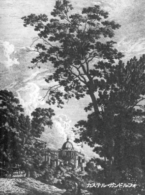
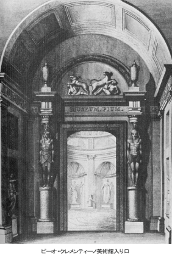

各人の所有物が敬虔な供え物として奉呈され、共同の所有にされるのを待ちうけている使徒たち。一方の側にはその供え物を持ってくる信者たち、他の側にはそれを受納する貧困者たちがいて、中央には恐ろしい罰を受けている詐取者がいる。配置に均整がとれているのは題材に由来するもので、それはまた表現されるべきものの必要から、あいまいにされるどころかむしろ強調されている。それは人体に欠くことのできぬ均整のとれたプロポーションが、多様な生活活動を通じて初めて切実な関心を呼び起こすのと同じである。
この作品を眺めていると、言うべきことに限りがないだろうが、ここではこの画の重要な功績を一つだけ特記しておこう。ひと包みにした衣類を担って近づいてくる二人の男性は、たしかにアナニヤ家のものである。しかしどうしてこれを見て、衣類の一部が残され、共有財産からかすめ取られたことを知り得るのか？ ここでしかしぼくらの注意は、晴れやかな顔つきで右手から左手へお金を移しながら数えている、若くて美しい女性へと向けられる。そしてすぐに、「右の手のなすところを左の手に知らせるな」〔新約「マタイ伝福音書」第六章三〕という貴重な格言を想い起こし、これは疑いもなくサッピラその人であると思いつく。彼女は使徒たちに渡すべきお金をいくらかは手もとに残しておくために数え分けているのだが、それは彼女の晴れやかにずる賢い顔つきが暗示しているように見える。この着想は、これにじっと思いをいたすとき、驚嘆に値するものであり恐ろしいほどである。目の前には、倒れ、罰をうけて恐ろしく痙攣しながら地面でもがいている夫がいる。その少し後ろには、いま起こっていることも気づかず、いかなる運命に会うか夢にも知らずに、神のごとき人びとを欺こうと、たしかに奸智をめぐらしている妻がいる。そもそもこの画は一つの永遠な問題としてぼくたちの前にあり、その解決が可能となり明白になればなるほど、ますますこれを感嘆せずにはいられない。ラファエロの素描によった同じ大きさのマルカントーニオの銅版画との比較、そして下絵を模した、もっと大きなドリニイの銅版画との比較は、このような才能が同じ構図を二度目に取り扱う際に、いかなる叡智をもって変形と昂揚とを行うことができたかを、あらためて深く考えさせずにはおかない。このような研究は、ぼくたちにとって、長い生涯における最も美しい喜びとなったことをすすんで告白しよう。
七月
通信
ローマにて、一七八七年七月五日
ぼくのいまの生活は青春の夢にじつによく似ている。ぼくはその夢を享楽するよう定められているのか、それとも、これもまた他の多くのことと同様、ただ空しいものにすぎないことを経験するよう定められているのか、知りたいものだ。ティッシュバインは出発し、彼のアトリエは片づけられ掃除され、洗い清められたので、ぼくはいますすんでそのアトリエに住んでいる。いまの時候には気持のよいわが家をもつことが、どんなに必要であろう。
暑さはものすごい。朝は日の出とともに起きて、住まいのそばの城門から三十分ほどのところにあるアックワ・アチェトーサ〔テヴェレ河畔、ポルタ・デル・ポポロ（城門）の前にある〕の炭酸泉へ行って水を飲む。弱いシュヴァルバッハ水の味がするが、このころの気候になるとひじょうにききめがある。八時頃には帰宅して、気分のおもむくままにいろいろと勉強する。体の調子はすこぶるいい。暑さが水分をすべて運び去り、体内の刺戟性のものを皮膚の方へ追い出す。疾患は、ずきずきと痛むよりは
痒いほうがいいのである。スケッチは趣味と腕をみがくためにつづけているし、建築も本気になってやりだした。なにもかも驚くほどやさしくなる（といっても理解力のことで、実習のほうは一生を要するのだ）
なによりもよかったのは、
自惚もなければ潜越な望みもなかったことで、ここへ来るとき、何ひとつ求むべきものをもたなかったことだ。そしていまぼくは何ひとつ名称とか言葉だけにとどまらないよう努めている。およそ美しく、偉大で、畏敬に値すると考えられるものを、この目で見、認識しようと思っている。このことは模倣なしには不可能だ。そこでぼくは石膏の首に向って坐らねばならない。（正しい技法は美術家たちから暗示を受けている。ぼくはできるだけ心を集中するようにしている）
この週の初めには、ここかしこの食事に誘われるのを拒むことができなかった。すると彼らはさらにぼくをあちらこちらへ連れ出そうとする。ぼくそれをほっておいて静かに閉じこもっている。モーリッツ、同宿の二、三の同国人、実直なスイス人などが、ぼくの日常つきあっている人だ。アンゲーリカと顧問官ライフェンシュタインのところへも行くが、どこへ行っても例の瞑想的な態度を持していて、誰にも心を打ち明けない。ルッケジーニがまた当地へ来ているが、彼は世間を見つくしていて、いかにも世間人という感じである。ぼくの目に誤りがなければ、自分の仕事を正しく行う人だ。そのうちに知り合いになりたいと思っている二、三の人物については、近いうちに書き送るつもりだ。
『エグモント』は執筆中で、うまくいくだろうと思う。制作中には、これまでいつも少なくとも何らかの徴候を見たものだが、これに欺かれたためしはなかった。これまで何度もこの作の完成を阻まれてきて、いまそれがローマで完結することになるというのは、まことに奇妙なことだ。第一幕はすっかり書きあげられているし、作中の場面で、もう手を加える必要のないものもある。
種々の芸術について考える機会がたいへん多かったので、ぼくの『ヴィルヘルム・マイスター』はとてもふくれあがってゆく。だが、古いものから先に始末をつけていかなくてはならない。ぼくもいい加減な年になっているし、まだ何かやろうというには、怠けてはいられない。君も想像できるように、ほくの頭のなかには新しいものがたくさんあるが、大事なのは考えることではなくて、作ることである。対象をいったんそこへおいたら、もう別なふうにはおかないというようなのは、
厭うべきことなのだ。ぼくはいま、美術に関してじつに多くのことを論じたいのだが、しかし作品がなくて何が言えようか？ ぼくはさまざまな
些事は押しのけたいと思っている。だからぼくがこの地で奇妙奇抜に過ごしているこの時間も大目に見てほしいし、君たちの愛情ある同意によってこの時間を恵んでくれたまえ。
今度はここで筆をとめ、心ならずも一ページ空白のまま手紙を出さなければならない。日中の暑さがたいへんなものであったため、夕方近くになってぼくは寝入ってしまったのだ。
ローマにて、七月九日
これからは一週間に二、三度は手紙を書くことにしよう、郵便日が暑かったり、あるいは他の偶発事のために、君たちに条理の通った言葉を書き送れなくなることのないように。昨日はさまざまなものを繰り返し見てまわったが、ひじょうに美しい祭壇画のある教会をおよそ十二ばかり訪ねた。
それから、アンゲーリカと一緒にイギリス人ムーアのところへ行ったが、彼は風景画家で、その絵は大部分が卓抜な着想をもっている。なかでもノアの大洪水を描いたものがあるが、ユニークなものだ。他の画家たちは広々とした海を描くが、それは広漠たる水の観念をあたえるだけで洪水の観念はあたえないのにたいし、彼は高い山で囲まれた峡谷を描き、次第に
嵩を増す水がついにその谷へ落ちこんでくるのである。岩の形から察して、水嵩は山頂にまで達しようとしているし、それに谷間の背後が斜めに閉鎖され、断崖はすべて険しいために、絵は恐るべき効果をあたえている。いわば灰色の地に灰色で描かれているような絵で、かきまわされた濁水と降りそそぐ水とがきわめて緊密に結び合わされ、水は岩からほとばしり、したたり落ち、巨大な水嵩は共通の元素のなかで溶解しようとするかのようだ。そして太陽は照り輝くこともなく、水のベールを通してくもった月のようにのぞいているが、しかし夜というのではない。前景の中央には孤立した平らな岩の面が見え、その上に途方にくれた人間が二、三人避難しているが、その瞬間にも洪水が高まってきて彼らにおおいかぶさろうとしている。全体の着想はじつに見事なものである。絵は大きく、長さ七、八フィート、高さ五、六フィートはあろうか。ほかにも、よく晴れた朝や、卓抜な夜の絵などがあるが、何もいうべきことはない。
アラ・コエリ〔カピトリーノ丘の北端にあるフランチェスコ派の教会サンタ・マリア・アラコエリのこと〕で聖フランシスコ教団の二人の聖者の列福式のために、まる二日のあいだ祭典があった。教会の装飾、音楽、夜のイルミネーションと花火のためにたいへんな人出だった。近くにあるカピトリーノ神殿にも照明があてられ、カピトリーノ広場で花火が打ちあげられた。聖ピエトロ教会の祭のつづきのようなものだが、全体をひっくるめてひじょうに美しいものであった。ローマの婦人たちはこの機会に夫や友人に伴われて姿を見せるが、夜は白い衣服に黒いバンドをしめ、美しくしとやかだ。またコルソーでも、この頃は日中は外出しないので、夜になると散歩したり馬車を駆る者がしげくなる。暑さもひじょうにしのぎやすくなり、この頃はいつも涼しい微風が吹いている。ぼくは自分の涼しい広間にこもって、静かに満足に暮している。
ぼくは勤勉で『エグモント』も大いにはかどっている。十二年前にぼくが書きつけた場面が、ちょうどいまブリュッセルで演じられているのは不思議なことだ。現在では多くの点で諷刺文と受け取られるだろう。
ローマにて、七月十六日
もう夜もふけたのに、そんな気がしない。往来はいっぱいの人で、歌をうたったり、チターやヴァイオリンをひいたり、入れかわり立ちかわり往ったり来たりの騒ぎだからだ。夜は涼しくて気持がいい。昼もたまらぬほど暑くはない。
昨日はアンゲーリカと一緒に、プシュケーの伝説が描いてあるファルネシーナへ行った。これらの絵の色の美しいコピーを、どんなにたびたび、なんといろいろな場合に、自分の部屋で君たちと一緒に眺めたことであろう！ これらの絵は、あのコピーで暗記するほどによく知っているので、すぐにぼくの目をひいた。この広間、というよりも画廊は、装飾の点でぼくの知っている最も美しいものだ。いまでは大分いたんで修復されてはいるが。
今日はアウグストゥス帝の霊廟で動物の狩りたてがあった。この大きな、内部は
空で屋根のない、まんまるい建物は、いまでは一種の円形劇場のように、競技場や野牛狩用に設備されている、四、五千人は収容できるだろう。見せ物それ自体はそれほどぼくを喜ばせなかった。
七月十七日、火曜日
古代彫刻の修復家アルバチニのもとへトルソー〔おそらくはバッカスのトルソーのことで、前三世紀初期のギリシア人の作と推定される〕を見に行った。このトルソーはナポリヘ運ばれるファルネーセ家の所有物のなかに発見されたものである。それは坐っているアポロンの像で、美しさにおいてはおそらくこれに並ぶものはないだろうし、少なくとも古代の遺物の一級品にかぞえられるものだ。
ぼくはフリース伯爵のところで食事をしたのだが、彼とともに旅行している教区僧カスティは、自作の小説の一つ『プラハの大司教』を朗読した。たいしたものとは言えないが、ひじょうに美しい作品で、八行の詩句で書かれている。ぼくは彼をすでに、ぼくの好きな『ヴェネツィアのテオドロ王』の作者として評価していた。彼は今度『コルシカのテオドロ王』というのを書きあげ、その第一幕を読んだが、これまたきわめて愛すべき作品である。
フリース伯はいろいろなものを購入するが、なかでもアンドレーア・デル・サルト〔フィレンツェにおけるルネサンス最盛期の代表的画家〕のマドンナは六百ツェッキーノで買った。この三月にアンゲーリカはすでにこれに四百五十ツェッキーノの値を申し出ていたのだが、もしも勘定高い彼女の夫〔画家であるアントーニオ・ツッキ〕がなんの故障も申したてなかったならば、六百ツェッキーノでも出して買っていたことだろう。いまは二人とも悔んでいる。それは信じがたいほど美しい絵で、それを見ないうちは、ちょっと想像のつかないようなものである。
このように毎日なにか新しいことが現われ、それが古いことや前からつづいていることに加わって、大きな喜びをあたえてくれる。ぼくの目は立派に育成されてゆき、時がたてば
玄人にもなれるだろう。
テイッシュバインはある手紙のなかでナポリの恐るべき暑さについて苦情を述べている。当地も相当に暑い。火曜日の暑さは、外国人がスペインやポルトガルでも経験しなかったほどだという。
『エグモント』はすでに第四幕まで進んだ。この作品が君たちを喜ばせるよう願っている。三週間で仕上げるつもりだから、できあがったらすぐにヘルダー宛に送ろう。
スケッチと彩色も熱心にやっている。家から一歩出ても、ほんのちょっと散歩しても、必ず立派な画題に出くわす。ぼくの心象も記憶も、かぎりなく美しい対象でいっぱいである。
ローマにて、七月二十日
ぼくはちょうどこの頃、いままでぼくを責めさいなんできた自分の二つの主要な欠陥を発見することができた。一つは、ぼくがなそうと思い、またなすべきであったことの手法というものを、けっして学びたがらなかったことだ。そのために、生まれながらの素質は多分にありながら、実際になしとげたことはあまりないという結果になった。精神の力によって強制され、幸運と偶然の望むままに成功したり失敗したりした場合と、あることを立派に熟慮してなそうとするときに臆病になってなしとげることができなかった場合との、いずれかであった。
もう一つの、これに似かよった欠陥は、仕事や業務に、そのために必要とされるだけの時間をけっして当てたがらなかったことだ。ぼくは短い時間にひじょうに多くのことを考えたり結びつけたりできるという幸運を享受しているものだから、一歩一歩ことを成就してゆくことが退屈で我慢がならない。ところで、自らを矯正すべき時がきているように思うのだ。ぼくは美術の国に来ていて、専門のことをみっちり勉強したい。そうすれば今後の生活に安らぎと喜びをもち、他のことにも取りかかることができるであろう。
ローマはそのためにはすばらしい場所である。ここにはあらゆる種類の対象があるだけでなく、あらゆる種類の人間がいる。彼らは本気になって正しい道を歩み、彼らと語るうちに、こちらが楽々とすみやかに進歩することができる。ありがたいことに、ぼくも他人から学び受け入れることができるようになりはじめている
そんなふうで、ぼくは心身ともに以前より具合がよくなっている！ 君たちがぼくの作品によってそのことを認めてくれ、ぼくが旅に出たことをほめてもらいたいものだ。ぼくは自分の仕事と思索とを通じて君たちと密接な関係をもっている。その他の点ではむろんぼくはたいへん孤独で、人との会話も場合によって調節しなくてはならない。しかしそれもこの地では、だれとでも面白い話をすることができるから、他の場所よりは楽である。
メングスがどこかでベルヴェデーレのアポロンについて、これと同じくらい偉大な様式にさらに真実味のある肉づけがなされた立像があるとすれば、それは人間の想像し得るかぎりの最も偉大なものであろう、と言っている。ぼくが前に述べたアポロンだかバッカスだかのトルソーによって、彼の願いと予言とが実現されているように思える。ぼくの目は、そのような微妙な間題で決定を下すことができるほど十分には育成されていない。しかしぼく自身は、この遺物をかつて見たうちで最も美しいものと見なしたい。残念なことに、それはただのトルソーであるばかりでなく、
外皮が多くの個所で洗い落とされてしまっている。それは
雨樋の下に立っていたものにちがいない。
七月二十二日、日曜日
アンゲーリカのところで食事をした。日曜日にここの客となることは、もうしきたりになっている。食事の前にぼくたちは馬車でバルベリーニ宮〔バルベリーニ広場に接していて、カルロ・マデルノとロレンツォ・ベルニーニによって建てられた。ダヴィンチの名画とは、「虚栄と謙譲」という画題のもので、今日ではベルナルド・ルイーニの作とされている。「ラファエロの愛人」の肖像画というのは、今日では国立美術館にある、有名な「フォルナリーナ」のことである。着想はラファエロであるが、仕上げはジューリオ・ロマーノの初期の作と推定される〕へ、レオナルド・ダ・ヴィンチの名画と、ラファエロ自身の描いた彼の愛人の肖像とを見に行った。アンゲーリカと一緒に絵を眺めるのはじつに愉快だ。目がとても肥えているし、技巧に関する知識もたいへん
博いからだ。そのうえ彼女はすべての美しいもの、真実なもの、繊細なものにたいして、すこぶる敏感であり、また信じがたいほど謙譲である。
午後は騎士ダジャンクール〔フランスの美術史家〕のもとへ行った。金持のフランス人で、美術の衰微から復興までの歴史を書くために時と金を費やしている。彼の行った収集はきわめて興味深い。人間の精神は陰鬱な暗黒時代にあってもつねに活動していたことがわかる。その著述がまとめられれば、大いに注目されるだろう。
いまぼくはあることをもくろんでいるが、そのことで大いに学ぶところがある。ある風景を創作し写生したものを、ディース〔ハノーヴァーの出身の風景画家にして銅版画家〕という腕のいい画家がぼくの面前で彩色するのだ。それによって目も心もますます色彩と調和に慣れてゆく。総じてうまくことが運んでいるが、ただ例によってぼくは、やりすぎる。ぼくの最大の喜びは、ぼくの目が確実な形式によって育成され、形体と釣合いとに容易に慣れ、それと同時に明暗の釣合いや全体にたいするぼくの昔からの感情が、ほんとうに生き生きと再現してくることにほかならない。すべては練習しだいというところだ。
七月二十三日、月曜日
夕方トラヤヌス記念柱に登ってすばらしい眺望を楽しむ。そこから見おろすと、沈みゆく陽に照らされて
円形劇場がまことに見事な眺めである。カピトリーノ丘もごく近く、そのかげにパラティーノ丘があって、市街がそれにつづいている。夜遅くなってからやっと、通りをゆっくり歩きながら帰宅した。
方尖塔のあるモンテ・カヴァッロ広場は注目に値する。
七月二十四日、火曜日
ヴィラ・パトリッツィへ行った。落日を眺め、すがすがしい空気を味わい、わが精神を大都市の像で満たし、わが視界を長い線でもって拡張し単純化し、多くの美しく多様な対象によって豊かにするためだ。この晩は、アントニヌス記念柱の広場〔マルクス・アウレリウスの円柱（戦勝記念のため）があるピアッツァ・コロンナ。この円柱は、誤ってアントニヌス・ピウスのものとされたため、この名が残った。「キージ宮」はピアッツァ・コロンナの西側にある〕やキージ宮が月光に照らされるさまを見、年経て黒くなった記念柱が、より明るい夜空を背景に、白く輝く台脚の上に立つのを見た。このような散策の途上では、ほかにもどれほど無数の美しい物に出会うかしれない。しかし、これらすべてのもののごくわずかな一部だけでも自分のものとするためには、いかに多くの時間が必要であろうか！ それには一人の人間の生涯が、いや、つねに一段また一段とたがいに学び合って進んでゆく多くの人の生涯が必要である。
七月二十五日、水曜日
フリース伯と一緒にピオムビーノ公の宝石収集を見に行った。
二十七日、金曜日
ともかくすべての美術家が、老いも若きも、ぼくのわずかな才能を訓育し、おし広げることに助力してくれる。遠近法と建築術でもぼくは進歩したし、また風景の構図でも同様である。生きものにはまだ引っかかったままで、そこには一つの深淵があるのだが、真面目に勤勉にやればこれもまた上達するだろう。
先週の終りに催した音楽会について何かお知らせしたかどうかおぼえていない。それには当地でさまざまな楽しみをあたえてくれた人びとを招待して、コミックオペラの歌手に最近の
間奏曲の最上のものを演じてもらったのだ。皆が喜び、満足してくれた。
いまではぼくの広間はきれいに片づけられ、掃除されている。暑さがきびしくても、この部屋ではきわめて快適に暮せる、くもった日、雨の日、雷雨の日、それから、晴れてはいるがあまり暑くない日が二、三日つづいた。
一七八七年七月二十九日、日曜日
アンゲーリカと一緒にロンダニーニ宮へ行った。君たちはぼくが第一次ローマ滞在中に出した手紙から、メドゥサのことを思い出されるだろう。これは当時すでにぼくにもたいへんよく理解できたものだが、いまではこのうえない喜びをあたえてくれる。このようなものが世にあるということ、このようなものを作ることが可能であったということ、そのことを心に思うだけでも、人間を倍も豊かにしてくれる。このような作品について何を言ってみたところで所詮は空しい微風のようなものにすぎないが、もしもそうでなければぼくも何か言ってみたいところだ。
美術とは、それを見るためにあるもので、それについて語るためにあるものではない。語るとしてもせいぜいそれを目の前にしてでなければ語ってはならぬ。以前にぼくがなにやかやと美術論議に口出ししたことを、どれほど恥じていることか。このメドゥサのよい石膏模像を手に入れることが可能ならば、それを持って帰るのだが、しかしそれには、新たに型どられねばならないであろう。二、三売り物に出ているが、ほしいとは思わない。それらはぼくたちにその概念をあたえ保持してくれるどころか、その理念をそこなうからである。ことに口のあたりがなんとも言いようのないほど、まねのできぬほど立派にできている。
三十日、月曜日
終日、家にいて精を出した。『エグモント』は終りに近づき、第四幕はできあがったも同然だ。清書が終ればすぐに騎馬郵便で送ろう。君たちからこの作品に多少の賞賛を得られるならば、どんなにか喜ばしいことだろう！ この作を書きつつ、ぼくはまたすっかり若返ったような気がする。どうか読者にも新鮮な印象をあたえてほしいものだ。晩は家の裏の庭園で、ささやかな舞踏会があって、ぼくたちも招待された。いまはダンスのシーズンではないのに、みんな嬉々としていた。
イタリアの娘っ子にはそれなりの特徴がある。これが十年前なら、なかなかいけるというのが二、三いただろうが、いまはこの血管もかさかさに乾いてしまっている。それでこのささやかな祝宴も、しまいまで辛抱するだけの興味をあたえてくれなかった。このところ月夜が嘘みたいに美しい。
靄をぬけて昇ってくるまでの月の出は、まっ黄色で暖かみをおび、イギリスの太陽のごとく（come il sole d'Inghilterra）あとは夜じゅう澄みわたって気持がいい。一陣の涼風が吹き、すべては生き返る。明け方のころまで往来には始終いろいろな組がいて、歌ったり奏でたりしている。さまざまな二重唱が聞かれるが、オペラやコンサートのときと同じくらい、いやそれよりもっと美しかったりする。
七月三十一日、火曜日
月夜の景色を二、三紙にとどめ、それから他のいろいろためになる技術をやってみた。晩は、ある同国人と散歩にでかけた。ぼくたちはミケランジェロとラファエロとの優劣について論争した。ぼくは前者の、彼は後者の肩をもったが、ついには二人とも一緒になってレオナルド・ダ・ヴィンチを賞賛することで終った。いまやこれらの人びとの名がたんなる名称であることをやめて、このすぐれた人たちの価値にたいする生き生きとした理解がしだいに完全なものとなってくるのは、なんと嬉しいことであろう。
夜はコミック・オペラに行ってみた。新作の間奏曲「ご難つづきの劇場支配人」 L'Impresario in angustie〔チマローザの作曲〕はたいへんよいできばえで、劇場内がどんなに暑くても、幾晩でも楽しませてくれるものだ。詩人が自作を朗読すると、劇場主とプリマ・ドンナが一方で賞賛し、作曲家とセコンダ・ドンナが他方で非難し、そのあげくに一同が喧嘩をはじめるこの五重奏はたいへん成功している。女装した去勢歌手たちは、その役をますますうまくこなしては、ますます人気を得ている。たまたま寄りあった夏場だけの小さな一座にしてはじつにうまいものだ。彼らはひじょうに自然らしく巧みなユーモアをもって演じている。ひどい暑さで、気の毒にも連中はそれをじっと我慢してやっている。
報告
七月
これから書き出そうと考えている事柄の準備として、前巻では事件の進行上、注意をひかずに終ったかもしれない二、三の個所をここに挿入し、それによって、ぼくにはひじょうに重要な問題を、自然科学の愛好者にふたたび紹介する必要があると考える。
パレルモにて、一七八七年四月十七日、火曜日〔前出の一七八七年四月十七日と同じ文章がふたたびここに挿入されている〕
いろいろな幽霊に追いまわされ試練をうけたりするのは、まことに不幸なことである！ けさぼくは詩的夢想をつづけようという確固とした落ち着いた心づもりで公園へ出かけた。ところが思いもかけず、せんだってからぼくの背後に忍びよっている別の幽霊がぼくをとらえたのだ。これまでは桶や鉢のなかでばかり、それも一年の大部分はガラス窓の向うでばかり見なれていたあまたの植物が、ここでは喜ばしげに生き生きと自由な空の下に立っていて、その使命を余すところなく果たしているので、それらの植物はぼくたちにとってますます明瞭なものとなってくる。こんなにいろいろな、新しい、また新たにされた姿を目のあたりにすると、この一群のなかに
原植物を発見できないだろうかという年来の気まぐれが、またもやぼくの心に浮んだ。そういう植物がどうしてもあるはずだ！ さもなければ、あれやこれやの形象をとっているものが同じ植物であることがどうして認識できようか、もしそれらがすべて一つの規範にならって形成されているのでないとするならば。
これらのさまざまに異なる姿は、いったいどういう点で互いに区別されているのかを、ぼくは究明しようと努めた。そしてそれらは異なる点よりもむしろ似た点のほうが多いということを、いつも見出した。そしてぼくの植物学上の術語をもち出せば、それはうまく説明がつくのであったが、しかしそれも役には立たなかった。それはぼくの思考を進めずに、ぼくを不安にするのだった。ぼくの詩的名案も妨害されてしまった。アルキノウスの庭園は消えうせてしまい、世界の庭園が開かれたのであった。ぼくたち近代人はどうしてこんなに気が散り、到達することもやりとげることもできない要求へと駆り立てられるのか？
ナポリにて、一七八七年五月十七日〔前出の一七八七年五月十七日と同じ文章〕
さらにぼくは君に打ち明けねばならぬが、植物繁殖および組織の秘密がだいぶはっきりしてきた。しかもそれは思いもよらぬほどに簡単なものである。このイタリアの空の下では、きわめて面白い観察ができる。萌芽発生の主要点を発見したが、じつに明白で疑念の余地のないものだ。その他の点もすべてだいたいわかっているので、なお二、三の点さえもっと明確になればいいのだ。原植物とは世にも不思議な被造物で、このことでは自然そのものでさえ、これを発見したぼくを羨んでしかるべきだ。このモデルとそれを解く鍵とがあれば、そのあとは植物を無限に発明できるが、それらの植物は首尾一貫したものでなくてはならぬ。すなわち、そんな植物が存在しなくとも、存在する可能性があるもので、絵画や文学上の影像や仮象のようなものではなく、内的な真実性と必然性とをもつものである。同様の法則は、すべての他の生物にも適用され得るであろう。
これ以上の理解にたいする準備のために、ここではつぎのことだけを簡単に言っておきたい。つまり、ぼくたちがふつう葉と見なしている植物のこの器官のうちに、あらゆる形成物のなかに隠れたり現われたりできる真のプロテウス〔ギリシア神話で、自由に姿を変える海の神〕がひそんでいるということが、ぼくにはっきりしてきた。まえにもあとにも植物はつねにただ葉のみであり、未来の胚種とは切り離しがたく結びあっているので、その二つの一方なしには他方は考えることができないほどである。このような概念をとらえ、保持し、それを自然のなかに探しだすことは、ぼくたちを苦しいほどに甘美な状態へと移すところの一つの課題である。
煩わしい自然観察
それがぼくたち自身から生まれたものであれ、他人によって伝えられ植えつけられたものであれ、実り豊かな思想と呼ばれるものを自ら経験した人は、それによっていかなる情熱的な動きがぼくたちの精神のうちにひき起こされるか、いかにぼくたちが感激をおぼえるかを告白するであろう。それはぼくたちが、これから後ますます発展してゆくものを、その発展したものがさらに遠く行きつくところを、すべて総体的に予感するからである。このことを考慮するならば、ぼくがこのような発見によって情熱的に心を奪われ駆りたてられ、これだけを専一にとはいわぬまでも、残された全生涯を通じてこのことに従事しなければならないことを、ぼくにたいして承認してくれるであろう。
こうした傾向はぼくの心を内奥よりとらえていたのではあったが、しかしローマへ戻ってからは規則正しい研究など考えられなくなった。
詩、美術、古代、そのいずれもがぼくのいわば全部を要求した。そしてぼくは生涯においてたぶんこれほど苦労の多い日々を送ったことも、これ以上あくせく働いたこともなかったであろう。ぼくが毎日ほうぼうの庭園で、また散歩や行楽の途上で、自分のそばで目についた植物を採取したことを語るとき、専門家たちにはそれがあまりにも子供っぽく思われるかもしれない。特に種子の成熟がはじまる際に、さまざまな種子がどのように発芽してくるかを観察することが、ぼくには重要であった。そこでぼくは生長のあいだは奇形であるカクトゥス・オプンティア〔南欧の野生サボテン〕の発芽に注意を向け、それがまったくあどけなく、双子葉状に二枚のやさしい小さな葉を出すのだが、さらに発育するにつれ未来の奇形が発展してくるのを見て大いに喜んだわけだ。
種嚢についても注目すべきことに出会った。アカンサス（アカントス・モリス）の種嚢をいくつか家に持ち帰り、
蓋のない小箱にいれておいた。ところがある夜、ぱちぱちという音が聞こえ、やがて天井や壁に小さな物体のようなものがはじけとんだ。すぐには何なのかわからなかったが、後になって例のさやがはじけ種子があたりに散乱しているのを発見した。部屋が乾燥していたために、これほどの弾力性を発揮するほどの成熟を二、三日でなしとげたのだ。
こんなふうに観察した多くの種子のうちで、なお二、三のものに言及しておかねばならない。なぜならば、それらは期間に長短はあるが、かつてのローマに生長しつづけたもので、ぼくにとっては記念となったものだからである。笠松の実はじつに注目に値する発芽のしかたをした。それは一つの胚珠のなかに封じこまれたように高まってきたが、やがてこの頭被をぬぎすて、緑の針葉の頭飾をなして、今後の使命の兆しをすでに示した。
これまでのことが種子による繁殖に関することだったとすれば、若芽による繁殖にも同じように注意をうながされた。しかもそれは顧問官ライフェンシュタインによるもので、彼は散歩のたびごとにあちこちで枝を折り取っては、これを地中に挿せばどの枝もすぐに生長をつづけるにちがいないと、小うるさいほどに主張した。はっきりした証拠として、彼は自分の庭園のじつに立派に根づいた挿木を示した。ところがこのような一般に試みられた増殖というものが、将来において園芸術にとってきわめて重要なものとなったという事実を、できることなら彼に実際に経験させてやりたかった。
もっともぼくの注意をひいたのは、潅木のように高く伸びた石竹の株であった。この植物の生活力と繁殖力のさかんなことはよく知られている。若芽は枝につぎつぎとひしめきあい、結節は結節のなかへくさび形に結びついてゆく。この現象は長くつづくといっそう度が増し、若芽は見きわめがたいほどの狭い所から最高度の発展をとげる。その結果、満開になった花さえもがふたたびそのふところから四つの完全な花を咲き出させた。
この不思議な姿を保存するための手段が見あたらなかったので、それを正確にスケッチすることを企てた。その際に、ぼくは
変態の根本概念に関わるいくつかの見解に到達した。しかし、さまざまな義務のために気の散ることがいっそうひどくなったし、それにまた先の見えてきたローマ滞在も、ますます苦痛に重くのしかかってきた。
ぼくはそれから長いあいだまったく静かにひきこもり、上流社会の気ばらしの交際からは遠のいていたが、その後ぼくたちはある失策をしでかしたために、同じ地区の人びとはむろんのこと、新奇な出来事をさがし求めている社交界の注目をも引いてしまった。事の次第はつぎのごとくである。
アンゲーリカはけっして劇場へ行かなかったが、ぼくたちは、どんな理由から行かないのか尋ねもしなかった。しかし大の芝居好きであるぼくらは、彼女のいるところで歌手たちの優雅さや技量、ひいきのチマローザの音楽の効果的なことをほめちぎり、どうにかして彼女をもこのような楽しみにあずからせたいと、ひたすら願っていたそのやさき、つぎのことが起こった。すなわち若い連中、特に歌手や音楽関係の人びととひじょうに仲のよかったブリー〔画家で、ローマではゲーテと同じ家に住んでいた〕の計らいで、歌手たちの熱心なひいきであり、彼らに熱烈な拍手をおくるぼくらのために、いつか折をみてぼくらの広間で音楽を奏し歌をうたおうと、先方から喜びいさんで申し入れてきたのである。この計画は何度も相談され、申しこまれては延期されていたのだが、ついに若い連中の希望どおりに愉快な実現をみたのである。
ヴァイマル公国に仕えているすぐれたバイオリニストである指揮者クランツが、イタリアで修業するために休暇をもらい、思いもかけずやってきたので、たちまち事は決まったのである。彼の才能が音楽愛好家の秤にのせられた。そしてアンゲーリカ夫人、彼女の夫、宮中顧問官ライフェンシュタイン、ジェンキンズ氏〔イギリス人で元来は画家だが、後に美術商、銀行家となった。ローマおよびカステル・ガンドルフォに邸宅を所有し、ローマではゲーテの筋向いに住んでいた。次のヴォルパートは銅版彫刻家。レオナルドやラファエロの銅版画の製作者として有名〕、ヴォルパート氏、その他ぼくたちが愛顧をうけていた人たちを、上品な祝宴に招くようなはめになった。ユダヤ人〔金貸しとして来たのである〕と室内装飾師が広間の飾りつけをし、近くのカフェーの主人が飲食物のことを引き受けてくれた。こうしていとも美しい夏の夜に華やかな音楽会が催されたが、窓の下には大勢の人が集まり、劇場にでもいるかのように、歌にたいして盛んな拍手をおくっていた。
そればかりか、最も人目を引いたことには、音楽好きな連中による楽隊を乗せた大きな乗合馬車が、ちょうど夜の街を巡回演奏しようとしていて、それがぼくたちの家の窓の下に止まったのであった。彼らは階上の努力にたいして盛んな喝采をおくったのち、そのなかの一人がしっかりした
最低音で、ちょうどぼくたちのほうで部分的に演奏していたオペラのなかの最も人気のあるアリアの一つを、全楽器の伴奏つきで唱和した。ぼくたちは力いっぱいの喝采をもってこたえ、群衆もまた一緒に拍手をした。そして誰もが、いくつかの夜の楽しみに接したが、これほど完全で、偶然にも成功したものに出会ったことはないと口々に言いはやした。
それからは、ロンダニーニ宮に向い合っている、上品なしかも静かなぼくたちの住まいは、急にコルソーの注意をひくようになった。ある富裕な貴族がそこへ移って来たにちがいないと噂がたったが、だれもその名前を知名の士のなかに見出し、つきとめることができなかった。もちろん、こうした祝宴が金銭づくの催しであったとすれば、よほど多額の支出を要したであろうが、この場合は芸術家が芸術家に寄せる好意から催されたもので、たいした費用は要さなかったのである。ぼくたちはそれからも以前の静かな生活をつづけたが、しかし富裕であるとか高貴な生まれであるとかいう先入観を、もはやしりぞけることができなくなってしまった。
活発な社交にたいする新しい契機となったのは、フリース伯の到着であった。彼は僧カスティを伴ってきたが、この人は当時まだ印刷されていなかった粋な物語の朗読によって、大いに人びとを喜ばせてくれた。彼の明朗な即席の朗読は、あの機知に富んだ、きわめて独創的な叙述を躍如たらしめるように見えた。ただ遺憾に思ったことは、フリース伯のように善意の富裕な芸術愛好家が必ずしも、十分に信用できる人からのみ奉仕されるとはかぎらないことである。贋造の彫刻宝石の購入は大いに話題になり、憤慨の種となった。しかし一方ではある美しい立像を購入できて、フリース伯はひじょうに喜んでいた。それはパリスを、別の解釈によればミトラ〔ローマに伝えられたペルシアの日の神〕を表わしたものといわれ、それと対になる像は現在ピーオ・クレメンティーノ博物館にあるが、両者ともどもにある砂坑で発見されたものであった。
しかし彼をひそかにつけねらっているのは、美術商の仲買人ばかりではなかった。伯はさまざまな冒険をのりきらねばならなかった。それに彼はだいたい暑中をいたわるすべを知らなかったので、種々の病患に襲われざるをえなかった。そしてそれが彼の滞在の終末を不愉快なものにした。ぼくは伯の厚意にはいろいろと負うところがあり、たとえばピオムビーノ公のすぐれた宝石収集を、彼と一緒に見るというような好機にも恵まれたので、なおさら心を痛めた。
フリース伯のもとには美術商のほかに、当地では僧衣をまとって歩き回っている類いの文士仲間もやってきた。彼らと話をするのは愉快ではなかった。話が国民文学のことにおよび、いろいろな点で知識を得ようとするや否や、いきなりそして無造作に、アリオストとタッソーのいずれを最も偉大な詩人と考えるか、といった質問を耳にしなくてはならなかった。その答えとして、このようにすぐれた人物が二人も一国民に恵みあたえられたことは、神と自然にたいして感謝さるべきであり、いずれの詩人もその時代と境遇、情況と気分に応じてぼくたちにすばらしい瞬間を授け、ぼくたちの心を静め恍惚とさせた、と言おうとも......この道理ある言葉をよしとする者はだれもいなかった。そして軍配をあげられたほうの詩人は高く、そしていっそう高くもちあげられ、これにたいして他方のは低く、いっそう低くおとしめられた。
最初のうちは、ぼくはけなされたほうの弁護をひきうけ、彼の長所を認めさせようと努めた。しかしこれはきき目がなく、人びとは一方に味方して自説を固執した。同じことがたえず繰り返され、こういう問題について討論風に言い争うのは、あまりにも気の重いことに思われたので、ぼくはこうした会話を避けるようにした。ことに、対象にたいして本当の興味をいだかず、ただ決まり文句を口に出し主張しているにすぎないことに気づいたからである。
ダンテが話題にのぼったときは、いっそうひどかった。身分も知力もあり、この非凡な人物にたいして真実な関心を抱いているある青年は、ぼくの賛同と是認とを快く受け入れなかった。彼はひじょうに直截に、いかなる外国人も、イタリア人でさえも全部はついてゆけないような、このような非凡な精神を理解することは断念しなくてはならぬ、と確言した。二、三やりとりがあった後、ついにぼくは腹立たしくなって、つぎのように言った。正直に言えば、あなたのご意見に賛成したい気持である。というのは、人びとがどのようにあれらの詩を読んでいるのか、ぼくにはとうてい理解できないからだ。ぼくには「地獄篇」はひどくおぞましいものに思われ、「煉獄篇」はあいまいで、「天国篇」は退屈に感じられる、と。
彼はこれにはたいへん満足した。つまり彼はこの言葉から自分の主張にたいする一つの論証を引きだすことができたのである。これこそまさしく、ぼくがこれらの詩の深さも高さも理解できないことを証明するものである、と彼は言うのである。ぼくたちは最良の友として別れた。彼はそのうえ、彼が長いこと熟考して、やっとその意味を得心できた二、三の難解の個所を知らせて、解説してくれることをさえぼくに約束した。
美術家や美術愛好家との会話からも、残念ながらあまり得るところはなかった。自分自身にも認めざるを得なかった欠陥は、しかし、結局は他人にも許容されることになった。あるいはラファエロを、あるいはミケランジェロをすぐれているとしたが、そこからでてきた結論はただつぎのことだけであった。すなわち人間とはひじょうに偏狭なもので、たとえ彼の精神が偉大なものにたいして開かれていても、それぞれ異なった種類の偉大さを同等に評価しそれを是認する能力は、けっして手に入れることができないものである、と。
ぼくたちはティッシュバインがいなくて感化を受けられないのを残念に思っていたが、彼はそのかわりにひじょうに生き生きとした手紙をよこして、ぼくたちの損失をできるかぎりつぐなってくれた。変った事件や独創的な見解を、いろいろと機知に富んだ書きぶりで知らせてくるほかに、それによって彼がその地で頭角をあらわすことになった一枚の絵のスケッチと下絵を通じて、もっと詳しいことを知ることができた。そこにはオレストの半身像があり、彼が生け
贄の祭壇のところでイフィゲーニエに認められ、彼をこれまで迫害してきた復讐の女神たちがちょうど退散するところである。イフィゲーニエは、そのころ美貌と名声との最高峯に輝いていたハミルトン夫人に生き写しの姿であった。復讐の女神の一人もまた、彼女に似せることによって上品に描かれていた。彼女は総じてあらゆる女丈夫、ミューズの女神、半女神の典型とされていたのである。これほど腕のある画家なら、騎士ハミルトンの著名な社交のサークルに大歓迎でむかえ入れられたことだろう。
八月
通信
ローマにて、一七八七年八月一日
暑さのため一日じゅうひきこもって仕事に精をだす。酷暑の際のぼくの最上の喜びは、君たちがドイツでよい夏を送っているだろうという確信である。当地で干し草を取りこむのを眺めるのはこのうえない楽しみである。この季節にはまったく雨が降らないので、農作業はやろうとさえ思えば思うがままに営まれるからである。
夕方テヴェレ河の立派に設計された安全な水浴場で水浴びをした。それからトリニタ・デ・モンティ〔市の北方、ピアッツァ・ディ・スパーニャ（スペイン広場）の上手にある教会および修道院〕に向かって散歩し、月光をあびながら新鮮な大気を吸った。この地の月光は想像と空想の世界へと人をさそう。
『エグモント』の第四幕は完了した。次の手紙では君〔フォン・シュタイン夫人〕にこの作品の完成を告げたいものと思っている。
八月十一日
ぼくはつぎの復活祭までイタリアにとどまっている。見習い修業の途中で逃げだすわけにはいかない。辛抱すれば、友人たちに共に喜んでもらえるほど進歩することは確実だ。君たちにはたえず手紙を書き送るつもりだし、ぼくの著作もつぎつぎに届くだろう。こうすれば君たちはかつてはしばしば、ぼくのことをその場に居合わせながら死者に等しいものとして残念がったのに、これからはぼくを不在ではあるが生きている者として考えてもらえるわけだ。
『エグモント』はできあがり、この月末には発送できるだろう。それからは心を痛めながら君たちの判断を待つことになる。
美術上の知識と習練とが進まずに過ぎ去る日は一日とてない。蓋をあけた瓶を水中につっこめば、たやすく水でいっぱいになるように、感受性があり用意ができていれば、ここでは容易に自らを充実させることができる。美術的要素はあらゆる方面から押しよせてくるのだ。
君たちの過ごしているよい夏を、ぼくは当地にいて予言することができた。当地では空はいつも同じように澄んでいて、真昼の暑さは恐るべきものだが、ぼくの涼しい広間にいればなんとかしのげる。九月と十月は田舎で過ごし、自然をスケッチしたいと思う。ハッケルトの教えを受けるためにたぶんまたナポリへ行くことになろう。彼と一緒に田舎に滞在した二週間は、ぼく一人では数年を要したであろう以上の上達をぼくにさせてくれた。まだ君〔フォン・シュタイン夫人〕に送るものは何もない。一ダースほどある小さなスケッチは、突然の贈物で君を驚かすためにとっておく。
今週は静かにそして勤勉に過ごした。とりわけ遠近法ではいくつかのことを学んだ。マンハイムの校長の息子フェルシャッフェルト〔画家で建築家〕はこの理論を十分に研究し、彼の技術をぼくに伝授してくれた。また、月光の景色が二、三、板に描かれ墨で影がつけられた。その他二、三の着想も描いたが、それは報告するには少し奇矯すぎるものだ。
ローマにて、一七八七年八月十一日
ぼくは公爵夫人〔ヴァイマル公母堂アンナ・アマーリア〕に長い手紙を書き、イタリアへの旅行をもう一年延期されるようにおすすめした。十月に出発されと、ちょうど天候が一変する時分にこの美しい国に到着されることになり、せっかくの楽しみもだいなしになる。ぼくの意見にこの点および他の点で従われるなら、運がよければご満足が得られるだろう。今度のご旅行に幸あるようにぼくは心から祈っている。
ぼく自身のためにも他の人びとのためにも配慮はしておいた。それで、将来のことは心安らかに待つことにしよう。なにびとも自らを鋳造し直すことはできないし、なにびとも自らの運命を逃れることはできない。まさにこの手紙から君〔ヘルダーを指す〕はぼくのプランを読みとり、それを是認していただけると思っている。ここにはもう何事も繰り返さないことにする。
ぼくはたびたび手紙を書き、冬じゅうはいつでも心のなかでは君たちのもとにいるだろう。『タッソー』は新年になってから送る。『ファウスト』は彼のマントに乗って、急使としてぼくの到着を告げることになろう。それがすめば、ある主要な時期を経過して、きっぱりとそれを終えたことになるわけで、必要の際はまた新たにとりかかることができる。ぼくは以前よりも気楽な心持でいるし、一年前とはほとんど別人のようだ。
ぼくは、自分自身にとって特別に好ましく価値あるいっさいのものを、過剰なほど豊富に享受しながら暮している。この二、三カ月は初めて当地で自分の時間を十分に楽しんだ。というのは、いまやすべてのことが解明され、芸術はぼくにとって第二の自然のようになりつつある。それはユピテルの頭から生まれたミネルヴァ〔知恵、技芸の女神〕にも等しく、最も偉大なる人間たちの頭から生まれたものなのだ。このことについては後日、君たちと幾日でも、いや幾年でも話を交わしたいと思う。
君たちすべてのためによい九月がくるように願っている。ぼくたち皆の誕生日が集中している八月の末には、君たちのことに一心に思いをはせたい。暑さが衰えたらスケッチのために田舎へ行くが、それまでは室内ですべきことをやっている。それにしばしば休憩しなくてはならない。とりわけ晩は風邪をひかぬよう注意しなくてはならない。
ローマにて、一七八七年八月十八日
今週はぼくの北欧ふうの勤勉さも多少ゆるめなくてはならなかった。最初の幾日かはあまりに暑すぎたからだ。二日ほど前からじつに気持のいい、山から吹きおろす
北風のために、外気がよく吹き通っている。九月と十月の二カ月はすばらしい月になるにちがいない。
昨日は日の出前にアックア・アチェトーサへ馬車を駆った。風景、ことに遠景の明澄さ、多様さ、
靄のかかった透明さ、崇高な色合いを眺めていると、実際頭がぼうっとしてくる。
モーリッツは現在、古代遺物の研究をしているが、若い人びとや、思索を事とする各人が利用できるようにそれを人間的なものにし、書物のかびや学校のほこりをすべて一掃してくれるであろう。彼は事物を見るのにじつに効果的な正しい方法をもっているのだから、徹底的にやるだけの時間をかけたらよいと思う。ぼくたちは夕方には散歩に行くが、彼はその日に熟考した部分や、彼が読んだ著者の説をぼくに話してくれる。それによってぼくが他の仕事にまぎれて放っておかざるを得ないような、また後になって辛うじて補足できるような、あの隙間が充たされることになる。ぼくはそのあいだに建物、街路、地区、記念物などを眺め、晩に家へ帰ると、特にぼくの注意をひいたものを談笑しながら戯れに絵にするのだ。昨晩こんなふうにして描いたスケッチを君〔シュタイン夫人〕のために同封することにする。それはカピトリーノ丘を後ろから登って行くときに、たまたま思いついたものである。
親愛なアンゲーリカと一緒に日曜日にアルドブランディーニ公子〔ボルゲーゼ家の第二子〕所蔵の絵、ことにレオナルド・ダ・ヴィンチのすぐれた絵を見に行った。彼女はじつにたいした才能と日ごとに増えてゆく財産をもち、当然しあわせであるべきなのに実際はそうでもないのだ。彼女は求めに応じて描くことに
倦み疲れているのだが、彼女の年とった夫は、軽い仕事でしばしばずっしりした金額が入るので、おおいに悦に入っている。彼女はいまでは自身の喜びのために、もっと暇をかけ念入りに研究して仕事をすることを願っているし、それができるはずだ。彼らには子供がないし、利息だけでも使いきれない。そのうえ毎日、適度の仕事をしていても十分な収入がある。ところがそういう風にはやらないし、これからもそうはしないだろう。
彼女はぼくとひじょうに素直に話をする。ぼくも自分の意見を述べ、彼女に忠告もしてきたし、彼女のところへ行くたびに彼女を励ましている。十分なものを所有しながらそれを使用することも享受することもできない人たちこそ、貧困で不幸だというべきなのだ！彼女は信じられぬほどの、女性としてはじつにすばらしい才能をもっている。彼女が残してゆく過去の仕事ではなく、彼女が現在、作っているものを見て評価しなくてはならぬ。欠けている点を数えたてるとなれば、どれだけの美術家の仕事がよくもちこたえられるだろうか！
親しい人びとよ、このようにしてローマが、ローマの雰囲気が、芸術と美術家たちが、ぼくにますます熟知したものとなり、もろもろの事情がわかってくる。それらは共に生活し、あちらこちらと歩きまわることによって近しい自然なものとなってくる。たんに訪れるだけでは、誤った概念をあたえるだけだ。人びとは当地でも、ぼくを静かな秩序ある生活から連れだして世間のなかにひきいれたがっているが、ぼくはできるかぎり身を守っている。約束をし、延期をし、回避し、また約束をする。つまりイタリア人にたいしてはイタリア風に振舞っているのだ。枢機卿で国務卿でもあるブオンコムパニは、それとはっきりわかるようなそぶりさえしてみせたが、九月なかばに田舎へ出かけるまで、受け流しておこう。ぼくは紳士淑女を恐れはばかること疫病のごとしで、彼らが馬車を駆るのを見ても、すでに苦痛をおぼえるほどだ。
ローマにて、一七八七年八月二十三日
君たちのなつかしい第二十四信を一昨日受け取ったが、ちょうどヴァティカンへ出かけるところだったので、途中でもシスティナの礼拝堂のなかでも繰り返し何度も読んだ。つまり見物と観察とを休止するたびに読んだのである。君たちもここにおられたならと、どれほど願ったことか言い表わすことができないほどだ。それは、ある比類のない練達の士がどれほどの物を制作し、また成就し得るかについて君たちに理解してもらいたいからだ。システィナの礼拝堂〔ヴァティカンの中にある教皇の家庭礼拝堂〕を見ずしては、およそ一個の人間が何をなしうるか、はっきりした概念をつかむわけにいかない。
多くの偉大で有能な人間のことを聞いたり読んだりはするが、しかしここにはそれが頭上に、眼前に、いまだに生き生きとして存在しているのだ。ぼくは君たちといろいろ話し合ってきたが、それがすべて紙の上に残されていたらと願う。君たちはぼくのことを知りたがっているが、ぼくはどんなに多くを語ることができるだろう！ というのも、ぼくはほんとうに生まれ変り、新たにされ、充たされているからだ。ぼくは自分の力という力の総体が結合するのを感じ、そしてもっと何かをやりたいと思っている。風景や建築についてはこのごろ本気になって省察してきたし、二、三試みたこともあり、そしていまは、それがどういう結果になるか、またどこまで到達できるものかを見ている。
いまはついに、およそぼくたちに知られているあらゆる事物のアルファにしてオメガである人体がぼくをとらえ、そしてぼくも人体をとらえた。ぼくは言う、「主よ、汝われを祝福したまわずば、われ汝を放たじ。かくてわれはあしなえとなるまで力くらべせん〔「創世記」第三二章〕」。スケッチの方はいっこうにうまくいかない、そこで彫塑をやることに心を決めたが、これはどうやら進みそうに見える。少なくとも、多くのことをやさしくしてくれるような、ある考えに到達した。それを細かく述べれば、あまりに長たらしくなるだろうし、それに語るよりは行うほうが有益である。要するに、こういうことになるのだ、つまり、ぼくの執拗な自然研究と、ぼくが比較解剖学の研究にとりかかったときの用意周到さが、いまや自然や古代美術品におけるいろいろなことを総体的に見る能力をぼくにあたえてくれているのだ。このいろいろなことを一つ一つ研究することは、美術家にとって困難になっているし、ようやくそれに到達しても、彼らはそれを自分一人だけで所有して、他人に伝えることができないものなのである。
ぼくはあの予言者〔ゲーテが当時すでに不和な間柄にあったラファーター〕にたいするうっぷんから隅っこに投げこんでおいた、人相学上の作品をすべてまた引きずりだしたが、それはぼくに大いに役立っている。手はじめにヘラクレスの頭をやりだしてみたが、それがうまくゆけば、さらにつづけてみたい。
ぼくは現在、世間からも世俗的なあらゆる事物からもひどくかけ離れているので、新聞などを読むとほんとに妙な気持がする。この世の
状態は過ぎゆくべければなり〔「コリント前書」第七章〕。ぼくは永続的な関係を有するものだけに関わりたいと思うし、＋＋＋〔信心深い人たちが悪魔にたいして十字を三つ切るように、ゲーテはスピノザのことを冗談半分にこう書いた〕の教えに従って、ぼくの精神にまず永遠性を付与したいものだ。
昨日ぼくは、ギリシア、エジプトなどを旅行してきた騎士フォン・ワースリイのもとで多くのスケッチを見た。最もぼくの関心をひいたものは、アテネのミネルヴァ神殿〔アクロポリスにあるパンテオン神殿〕の
帯状装飾のなかにある浅浮き彫りのスケッチであった。これはペイディアス〔アテネを代表する彫刻家〕の作である。ここにある少数の簡素な形姿よりも美しいものは想像することができない。その他では、スケッチされた多くの対象物で魅力的なものはほとんどなかった。風景のほうは成功していなくて、建築物のほうがよかった。
今日はこれでさようなら。ぼくの胸像が作られている。そのために今週は三日ほど朝の時間をつぶされた。
一七八七年八月二十八日
この頃はいくつかのよいことに出会ったが、今日の祝日〔ゲーテの誕生日〕に尊厳な神の思想に満ちたヘルダーの小冊子が届いた。多くの欺瞞と錯誤との母胎であるこのバベル〔バビロニアの地名で、ノアの子供がこの地に天に達する高塔を建てはじめたため、神は人間の僣越を怒り、人間の言葉を混乱させ、人間を各地に分散させたと伝えられる〕の地にあって、このように純粋で美しい思想を読み、さらに、いまこそこのような志向、このような考え方が広められ得るし、また広められてよい時であると考えるのは、ぼくには慰めであり、ぼくを元気づけてくれた。ぼくはこの小著を孤独のなかにあってなおしばしば読み、心に銘記し、将来の語り草とするためにも、これへの覚え書を作っておこうと思う。
ぼくは近ごろ美術の観察において、ますます遠くまで四方に手をのばし、いまや、これから卒業すべく残されているほとんど全課題を展望することができる。しかしそれに卒業したとしても、まだ何ひとつ成就されたとはいえない。才能と熟練とに待たねばならぬようなことを、より容易によりうまく行うためには、たぶん別の機会があるだろう。
フランスのアカデミー〔ルイ一四世とコルベールによって創設された、ローマのフランス・アカデミー〕がその制作を展覧したが、そのなかには興味深いものがある。神々に自分の幸福な最後をこいねがうピンダロスが、その熱愛する少年の腕にもたれて死ぬところがある。この絵〔ジャン・バプティスト・フレデリック・デマレーの作〕の価値はたいしたものである。ある建築家はすこぶる面白い着想を実現した。彼は現代のローマを、そのあらゆる部分がよく見える一つの側面からスケッチした。そのつぎに彼は別の紙面に、同じ場所から眺めた場合の、古代のローマを描いた。古い記念碑の建っている場所はわかっているし、その形もたいていはわかっている。その多くには、いまなお廃墟が建っているからだ。そこで彼は新しいものはすべて取り除き、おおよそディオクレチアヌス〔ローマ皇帝（在位二八四～三〇五）〕時代に見えたであろうように、古いものを修復し、研究心と同じくらい趣味の心をもって、きわめて好ましい色彩をほどこした。
ぼくは自分のなしうることをなし、そしてすべてこれらの概念と才能のうちで、ぼくが引きずっていけるかぎりは自分の上に積みあげ、このようにして、しかも最も現実的なものを持って帰るのだ。
トリッペルがぼくの胸像を制作していることを、すでに君に話しただろうか？ ヴァルデック侯がそれを彼に注文したのだ。もうだいたいできあがっていて、全体としての感じはいい。ひじょうに手堅い様式で制作されている。模型ができあがれば、それにかぶせて石膏型を作り、それからすぐに大理石にとりかかるだろうが、大理石を彼は最後に実物によって仕上げたいと思っている。というのは、この材料においてなされ得ることは、他のいかなる材料においても達成できないからである。
アンゲーリカはいま一枚の絵を描いているが、それは大成功をおさめるだろう。グラックス兄弟の母〔スキピオ・アフリカヌスの娘コルネリア〕が、宝石をひけらかす女友達に、自分の子供たちを至上の宝として示している絵である。構図は自然で、ひじょうに成功している。
刈り入れが行われるように種を蒔くのは、なんと美しいことであろう！ 今日がぼくの誕生日であることを、ここではまったく黙っていた。そして朝起きたとき、故郷からは祝いのしるしは何もこないのだろうか、と考えた。ところがどうだろう。君たちの小包が屈けられ、ぼくは言いようのない喜びにひたっている。すぐに手紙を読もうと腰をおろし、読みおわって早速、心からの感謝を書きしるしている。
いまこそまず君たちと共にありたいと願っている。そうすれば会話がはじまるだろうし、二、三の暗示された点を詳論することになろう。ともかく、いつかはそうなるだろう。ぼくたちがいまそこからの里程をかぞえることができるような、一本の柱が立てられていることを、ぼくは心から感謝する。ぼくは力強い足どりで自然と芸術との広野を歩きまわり、喜びをもってそこから君のほうに向って行くだろう。
今日ぼくは君の手紙を受け取ったあと、もう一度じっくり考えてみたが、ぼくの美術研究も著作生活も、すべてがこの地での時を要求している、という考えに固執せざるをえない。美術においては、すべてが直観的な知識となり、何事も伝統や名称にとどまらぬところまでいかなくてはならない。そしてそれをこの半年のうちにやりとげねばならないのだが、ローマ以外のどこでもそれは不可能なのだ。ぼくの小さな仕事（というのはそれはひじょうに縮小されたかたちで見えてくるからだ）を、ぼくは少なくとも集中と喜悦とをもって終了しなくてはならない。
それからは、すべてがぼくを祖国へと引きもどす。そしてぼくがたとえ孤立したプライベートな生活を送ることになろうとも、ひじょうに多くのことに取りかえしをつけ、まとまりをつけねばならないので、これから十年は少しでも休息するひまは見つけられないほどだ。
博物学でも、思いがけぬものを君に持参するつもりだ。
有機組織のあり方にはひじょうに近づいてきていると思う。 君はぼくたちの神のこのような顕現（マニフェスタツィオーン）......放射（フルグラツィオーン）ではない......を喜びをもって静観すべきである。そして古代および近世において誰がこれと同じことを発見し、思考し、それを同じ側面から、あるいはあまり違わない観点から考察したかを、ぼくに教えていただきたい。
報告
八月
この月の初めにぼくの心に、今度の冬もローマにいようという計画が熟してきた。この境遇からいま離れたらぼくはなおまったく未熟なままであろうし、それにまた、ぼくの作品の完結に必要なこのような場所、このような安らぎはどこにも見出せないだろうという感じと見通しとがついにぼくの心を定めたのである。そしてそのことを国へ知らせてやったとき、いよいよ新しい時期がはしまったのだ。
ひどい暑さはますますつのり、あまりに迅速な活動には制限が加えられるようになったために、自分の時間を静かに涼しく有効に過ごせるような、そういう部屋がなおさら快く願わしいものとなった。システィナの礼拝堂はそのためにはもってこいの場所であった。ちょうどこのころミケランジェロがあらためて美術家たちの尊敬を受けていた。ほかのさまざまな偉大な特質とならんで、彩色の点でも彼を凌駕したものはない、というのであった。そして彼とラファエロのどちらがより多くの天才を有したかを論争するのが流行となった。後者の〈
キリストの変容〔ラファエロの絶筆〕〉は時おりひじょうにきびしく非難され、〈
宗論〉は彼の作品のなかで最上のものと呼ばれた。それによって、後日はやり出した古い流派〔ナザレ派とよばれる宗教画家の一派〕の作品にたいする偏愛がすでに名乗り出たわけであるが、静かな観察者はこのような偏愛を、ただ生半可な不自由な才能の徴候と見なし、けっしてそれに親しむことができなかったのである。
一人の偉大な才能を理解することさえひじょうにむずかしいのに、二人を同時となれば、なおさらのことだ。ぼくたちはこれを派閥根性によって簡単にやってのける。それゆえ美術家や著述家の評価はたえずぐらつき、いつでも一方か他方かのいずれかが、もっぱら時代を支配することになる。ぼくはこのような論争にまどわされはしなかった。ぼくはその論争はそのままにして取りあわず、すべての価値あるもの品位あるものは、直接に観察するよう努めたからである。偉大なフィレンツェ人〔ミケランジェロのこと〕にたいするあの偏愛は、美術家からたちまち美術愛好家へと伝染した。はたせるかな、ちょうどそのころブリーとリップスとは、フリース伯の求めに応じてシスティナの礼拝堂において水彩画の模写をしなくてはならなかった。管理人はたっぷり金をもらったので、ぼくたちを祭壇のそばの裏口から中へ入れてくれ、ぼくたちは堂内で自分の家にでもいるように勝手に振舞った。多少の食物にもこと欠かず、日中のひどい暑さに疲れては、教皇の玉座の上で午睡をむさぼったこともあったのをいまでも思い出す。
梯子で達することのできた、祭壇画〔ミケランジェロの「最後の審判」〕の下部の頭や人体は、綿密な透写が作製されたが、最初は黒い紗を張った額ぶちの上に白墨で、つぎは大きな紙面の上に赤いチョークで透写をしたのである。
いっそう古いものへと好みが向いていって、同じようにレオナルド・ダ・ヴィンチがやはり名声を博した。彼の傑作といわれる〈パリサイの徒のなかのキリスト〉という絵を、ぼくはアンゲーリカと一緒にアルドブランディーニ画廊へ見に行った。アンゲーリカが日曜日の昼頃に彼女の夫や顧問官ライフェンシュタインと共に馬車でぼくの家に乗りつけ、それから皆で蒸し風呂のような暑さのなかを、できるかぎり心を平静にして、どこかある収集室におもむき、そこに二、三時間とどまってから、つぎは彼女のもとで結構な昼食に呼ばれるというのが習慣となってしまっていた。この三人は各々がそれぞれに理論的、実践的、審美的、技術的に教養をそなえていたので、優れた芸術作品を前にして彼らと共に話し合うことは、はなはだ有益であった。
ギリシアから戻ってきた騎士ワースリイは、持ち帰ったスケッチを好意をもってぼくたちに見せてくれたが、そのなかでもアクロポリスの切妻壁にあるペイディアスの制作を模写したもの〔パンテオンの破風の三角面部にあるもので、アテナの生誕、彼女がポセイドンを相手にしてのアッティカ州争奪などの図を模したもの。一八一六年以降、大部分はロンドンの大英博物館にある〕が、ぼくの心に決定的な、消しがたい印象を残した。ミケランジェロの描いた力強い形姿に刺戟され、人体に以前よりも多くの注意と研究とを向けていたために、その印象はいっそう強烈であった。
しかし、活発な美術生活に一つの重大な時期を画したのは、この月の末にもよおされたフランス・アカデミーの展覧会であった。ダヴィド〔フランス古典派を代表する歴史画の大家〕の描いた〈ホラティウス家の人びと〉によって、形勢はフランス人の側に優位にかたむいた。ティッシュバインはこれに刺戟されて〈ヘレナの面前でパリスに挑むヘクトル〉を等身大で描きはじめた。ドルエ、ガニェロー、デマレー、ゴフィエル、サントゥールなどによっていまやフランス人の名声が維持され、ボケーはプーサン流の風景画家として好評を博している。
そのあいだにモーリッツは古代の神話を勉強していた。以前からの流儀で、旅行記を書いて旅行の資金を調達するために彼はローマに来たのであった。ある書店の主人が彼に前貸をしてくれていたが、しかしローマ滞在中に、安易でつまらぬ日記を書けば罰を受けずにはすまないことにまもなく気がついた。毎日の会話や多くの重要な美術品の観照を通じて、彼の頭には古代人の神話を純粋に人間的なセンスで書き、教訓的な石版画の挿絵を入れて、将来これを出版しようという考えが生じた。彼は勤勉にこの仕事にたずさわり、それにぼくたちの集まりもこの問題については、十分に彼と有効な会話を交した。
彫刻家トリッペルが、フォン・ヴァルデック侯の求めに応じて大理石で制作することになっていた、ぼくの胸像の模型を作っていたとき、ぼくは彼のアトリエで、ぼくの希望や目的に直接的に符合するような、きわめて愉快で有益な会話を彼と交しはじめた。まさしく人体の研究のためには、それに
標準的にせよ異常な特性にせよ人体のプロポーションについて解明がなされるためには、このような条件のもと以外では成果はあげられなかったであろう。この時機はまた、ジュスティニアーニ宮〔パンテオンの脇にあり、カピトリーノ古代遺物収集についで最も立派なもの〕の収集品のなかでこれまで注目されずにいたアポロンの首のことをトリッペルに知らされたことにより、二重に興味あるものとなった。彼はこの首を最も高貴な美術品の一つと考え、それを購入したいと思っていたが、それは不成功におわった。それ以来この古代遺品は有名になり、後にプルタレス氏の手に入ってヌーシャテルへ送られた。
しかし、ひとたび海にのりだす人は、風と天候に制約されてあちこちへとその進路を取って行くように、ぼくもやはりそうした状態にあった。フェルシャッフェルトが遠近法の講習を開き、ぼくたちは毎晩そこに集まり、多数の会員が彼の説に耳をかたむけ、それをさっそく応用した。その際、十分なだけのことを学んで過度にならなかったのは、特筆するにたることであった。
この瞑想をこととする忙しい平穏さから、人びとはともすればぼくを引張りだしたがった。あの因果な音楽会は、小さい町と同様に昔から世間話のうるさいローマでは、いろいろに取沙汰されていた。ぼくのことやぼくの著作にはすでに注意が向けられていた。ぼくは『イフィゲーニエ』その他を友人たちのあいだで朗読したことがあったが、それも同じような評判になった。枢機卿ブオンコンパニはぼくに会いたいと望んだが、ぼくは周知の隠棲所に閉じこもっていた。そして顧問官ライフェンシュタインが、彼をとおしても会おうとしなかったのだから他のだれがやっても無駄であろうと、断固としてかたくななまでに主張したので、ぼくの隠遁はそれでいっそう容易になった。このことはぼくには大いに有利な結果となり、ぼくはつねに彼の信望を利用し、いったんそうと決めこんだ公然たる隠遁生活を守りとおしてゆくことになった。
九月
通信
一七八七年九月一日
今日『エグモント』ができあがった、と告げることができる。このあいだからずっとこの作品にあちこちと手を加えていたのだ。ぼくはこれをチューリヒ経由で送る。というのは、カイザーにたのんでこの劇の間奏曲その他、必要な音楽を作曲してもらいたいからだ。そのあとで君たちの楽しみに供したいと思っている。
ぼくの美術研究はたいへん進み、ぼくの原理はいたるところに適合して、あらゆることを解明してくれる。美術家が一つずつ骨折ってさがし集めねばならないものが、すべて一緒になっていまぼくの前に自由に公開されている。ぼくはいまや自分の知らないことがどれだけあるかわかっているし、すべてを知り理解するための道も開かれている。
モーリッツには、ヘルダーの神の説はひじょうに役立った。彼はそれによって確かにその生涯の一時期を画することになる。彼はその心情をこの方面へかたむけてきたし、ぼくとの交際で用意ができていたので、よく乾燥した薪のように、すぐにあかい焔となって燃えあがった。
ローマにて、九月三日
カールスバートを離れてから今日で一年になる。なんという一年だったろう！ 公爵の誕生日であり、ぼくにとっては新しい生活への誕生日であるこの日は、ぼくにとっていかに特別な時期であることか。この一年をどのように利用したかは、いまはぼくにも他の人びとにも算定できない。君たちと共にすべてを総計できるような時が、そういうすばらしい時が来ることを希望する。いまここで初めてぼくの研究がはじまる。もっと以前にここを去っていたならば、ぼくはローマをまったく見なかったことになろう。ここで何が見られ何を学びうるかはまったく想像もつかない。よそではそのことは理解できないのだ。
ふたたびエジプトのものに接することになった。このごろ、ある中庭のがらくたや泥のあいだに、こわれたまま横たわっている巨大なオベリスク〔エジプトのプサメティヒ二世（前五九四～五八九）のオベリスクで、エジプト北部の古代都市ヘリオポリスから出たもの〕を二、三度、見にいった。それはセソストリス王朝のオベリスクで、アウグストゥス帝に敬意を表するためローマで建設され、カムプス・マルティウス〔古代ローマの練兵場〕の地面に影を落とす、巨大な日時計の指針として立っていた。数あるなかで最も古くて立派なこの記念物も、いまはこわれたままそこに横たわり、二、三の側面は（おそらく火災のために）形を損じている。それでもやはり依然としてそこに横たわっていて、破損されていない側面は昨日にでも作られたかのように新しく、（こうしたものとしては）このうえなくすばらしい出来ばえである。
ぼくはいま、尖頭のスフィンクスと、他のスフィンクス、人物、鳥類などの顔面を型どらせ、石膏像を作らせている。これらのはかりしれぬほどの価値ある物を、ぼくたちはこのようにして所有していなくてはならない。ことに、噂では教皇がそれを直立させようとしているとのことで、そうなると象形文字にはもはや手が届かなくなるからだ。エトルリアの最もすぐれた美術品などにも同じことをしたいと思っている。いまぼくはすべてを真に自分のものとするために、これらの形成物の模型を粘土でかたどっている。
九月五日
ぼくにとって祝いの朝となるべきこの日に、ぼくはどうしても手紙を書かずにはいられない。というのは、今日こそ『エグモント』が本当に完成したからである。表題も人物名も書かれ、そのままにしておいた二、三の穴も埋められた。いまはもう、君たちがそれを受け取って読んでくれる時を期待して、前もって楽しんでいる。スケッチも二、三枚、同封するつもりだ。
九月六日
ぼくは君たちにじつに多くのことを書き、前便につづいてさまざまなことを言おうと企てていたのだが、いまそれが妨げられてしまった。そして明日はフラスカティ〔アルバーノ山脈中にあって、ここにライフェンシュタインの別荘がある〕へ行く。この手紙は土曜日に発送されるはずだ。それでせめてお別れに二言三言書き送る。おそらく君たちもいまごろは、ぼくたちがもっと広々としたこの空の下で亨受しているような快晴を、楽しんでいることと思う。
ぼくはつねに新しい思想を抱いている。周囲の事物が千種万様なので、それらはぼくをあるいはこの想念へ、あるいはあの想念へと呼びさますのである。多くの道筋から、すべてはいわば一つの点に寄り集まってくる。しかもぼくは自分と自分の能力とがどうなってゆくのかについて、いまや光明を見出していると言うことができる。自分自身の状態についてまずまずの理解を得るだけでも、かなりの年をとらねばならぬ。だから、利口になるには四十年を要するというのは、ただひとりシュヴァーベン人にかぎらぬことなのだ。
ヘルダーの健康がすぐれぬことを聞き、心配している。早くよい知らせを聞きたいものだ。
ぼくは心身共につねに具合がよく、根本的に治癒する希望がもてるほどだ。すべてのことが容易にはかどってゆき、時折は青春の息吹がぼくの身に吹きよせてくる。『エグモント』はこの手紙と一緒に発送されるが、郵便馬車に託するので、手紙よりは遅れて着くだろう。君たちがこれにたいして何というか、ぜひ知りたく待ちこがれている。
すぐに印刷にとりかかるほうがたぶんいいように思う。この作品が早々に出版されたならば、ぼくはどんなに嬉しいだろう。どうかよろしく取りはからってもらいたい。同巻に入れる残りの部分も遅らせないようにするつもりだ。『神』〔ヘルダーの著作〕はぼくの最上の伴侶である。モーリッツはそれによって自らを確立することができた。いわばこの書物だけが欠けていたのだが、これがいまや
要石となって、ともすればばらばらに崩れそうだった彼の思想を引き締めてくれるのである。それは〔モーリッツの著述『神話学』をさす〕じつに立派なものとなる。ぼくは彼によって鼓舞され、自然の事物のなかにさらに押し進んでゆき、特に植物学では「一にして全なるもの」〔前六世紀のギリシアの哲学者クセノファネス（一神論の代表者）にまでさかのぼる言葉で、ヘルダーの『神』のなかに引用されている〕に到達したが、それはぼくを驚嘆させている。それがどの範囲まで広がってゆくのか、ぼく自身にもまだわからない。
美術品を解き明かすぼくの原理、それはすでに美術の復興以来、美術家や有識者がどれほど心をくだいて研究しても求められずにいることを、一挙に解明するものなのだが、この原理はどの場合に適用しても、ますます正当なものであることをぼくは知った。もともとそれはコロンブスの卵のようなものだ。このような
自在合い鍵を所有していることは言わずに、ぼくはいま美術家たちと部分部分について適切に十分な論議をし、彼らがどの程度まで達しているか、何をつかんでいるか、どこで壁に突きあたっているかを理解するのである。扉をあけたままぼくは敷居に立っている。ところが残念ながらそこから殿堂のなかを見まわすことができるだけで、ふたたび立ち去ることになるだろう。
古代の美術家たちがホメロスと同じ程度に、自然にたいして偉大な知識を有し、また、何が描かれ得るか、いかに描かれねばならぬかについて、同じ程度のしっかりした概念を有していたことだけは、確かである。残念ながら第一級の美術品の数はあまりにも少なすぎる。だが、こういうものを見ると、それを本当に認識し、しかるのち安らかに世を去ることのほかは、何も望みがなくなるほどのものだ。これらの高貴な美術作品は同時に最も高い自然作品として、真実で自然な法則にしたがって人間の手で生み出されたものである。およそ恣意的なもの、虚妄なものはすべて崩壊する。そこには必然性がある、そこには神がある。
二、三日のうちに、ある熟練した建築家〔ルイ・フランソア・カッサ（一七五六～一八二七）。なお「パルミラ」は、シリア砂漠中にある廃墟〕の作品を見ることになっている。彼は自らパルミラへ行き、そこの事物を深い理解と愛好心とをもってスケッチしてきた。さっそくそのことについて報告し、この重要な遺跡についての君たちの考えを切に待ち望んでいる。
ぼくが幸福に生活していることを共に喜んでくれたまえ。実際これほどに幸福だったことはこれまで一度もなかった、と言ってよい。このうえない安らかさと純粋さとをもって生まれながらの情熱をいやし、長続きする楽しみから永続的な利用を期待することができるのは、やはり
瑣末なこととはいえない。ぼくが愛する人びとにこの享受、この感情のいくぶんたりとも伝えることができればよいのだが。
政界にただよう暗雲〔一七八七年九月から十月にかけてなされたプロイセンのオランダにたいする遠征をさす〕が四散すればと願っている。近代の戦争は、それが続いているあいだは多くの人びとを不幸にし、それが過ぎ去っても、なにびとをも幸福にはしない。
ローマにて、九月十四日
親愛な人びとよ、しあわせなことに、ぼくは依然として努力をモットーとして生活している。この頃はずっとまた、享受するよりは以上に、仕事にはげんできた。もうこの週も終ろうとしているので、君たちに手紙を書き送ろうと思う。ベルヴェデーレ〔ヴァイマル郊外の離宮〕のアロエがちょうどぼくの不在の年を選んで咲いているというのは残念なことだ。シチリアでは時期が早すぎたし、この地では、今年はたった一つしか咲いていない。あまり大きくなく、ひじょうに高いところに咲いているので目が届かないほどだ。いうまでもなくインド産の植物で、この地方にも適していない。
あのイギリス人〔このイギリス人と、あとに出てくるＢが誰のことかは不明〕の記述はぼくにはあまり面白くない。イギリスでは聖職者は大いに自戒に努めなくてはならないのだが、そのかわり相手の公衆にも畏怖心を起こさせる。自由なイギリス人も、道徳的な著述ではひじょうに拘束された物の言い方をしなくてはならぬ。
尾のある人間のことはぼくを驚かせはしない。記述から見てそれはひじょうに自然なことである。はるかに不可思議なことが毎日ぼくらの目の前に起こっているが、それがぼくらとそれほど近い類縁関係にないので、ぼくらが注意しないだけのことだ。
Ｂが多数の人間と同様、これまでは純真な敬神の念をいだいたことがなかったのに、老年になっていわゆる信心深くなるのは、まことに結構なことだ。ただし、ぼくらも彼らと共に教化さるべきである、などと言わないかぎりは。
二、三日のあいだぼくは顧問官ライフェンシュタインと一緒にフラスカティに行っていた。アンゲーリカは日曜日にぼくたちを迎えにやってきた。あそこは楽園である。『エルヴィンとエルミーレ』は半分ほどすでに書き改められている。この小品をもっと興味ある生気あるものにしようとして、きわめて平板な対話をすべて捨て去った。それは手習い仕事というか、あるいはむしろやっつけ仕事だ。すべてがそれを中心にめぐっている優美な歌唱は、当然のことながらすべてそのままにしてある。
美術の方面も盛んな勢いで研究が進められている。
ぼくの胸像はひじょうによい出来ばえで、だれもが満足している。たしかにそれは美しい高貴な様式で制作されていて、ぼくがそのような外見をしていたかのような観念がこの世に残ることにたいしては、なんら異存はない。それはいまやさっそくにも大理石ではじめられ、最後にもまた大理石で実物によって仕上げがなされる。運送はたいへん厄介である。そうでなければすぐにでも鋳像を送るところだが。たぶんいつか船便で、ということは、最後にはやはり箱を二つ三つ一緒に荷造りしようと思っているからだ。
子供たち〔フリッツ・フォン・シュタインとヘルダーの子供たち〕のためのボール箱を託したクランツは、まだ到着していないのだろうか？
ヴァレの劇場では二つのオペレッタがみじめな失敗をした後、現在では再度すこぶる優雅なオペレッタを一つ上演している。人びとはたいへん意欲的に演じていて、すべてがすっかり調和している。ところでまもなく田舎へ行くことになろう。二、三度、雨が降って気温がさがり、あたりの景色がふたたび緑に色づいている。
エトナの大噴火については、新聞がすでに報じたか、あるいはこれから報ずるだろう。
九月十五日
トレンク〔フリードリッヒ大王直属の将校で、寵愛を受けていたが、中傷されて捕えられ、最後にはパリでギロチンにかけられた〕の伝記を読んでみた。たいへん興味深いもので、それについてはじつにいろいろな省察がなされうる。
このつぎの便では、明日知りあうことになっている、ある注目すべき旅行者〔建築家のカッサ〕のことについて語ることになろう。
ともかくぼくの当地での滞在を喜んでくれたまえ！ローマはいまやまったくなじみ深い存在であり、そこにはぼくを過度に緊張させるようなものはもはやほとんどない。もろもろの事物は、ぼくを次第に自身のところまでもちあげてくれた。ぼくはますます純粋に、より多くの知識をもって享楽しているし、幸運はこれからもいっそう助力してくれるだろう。
ここに一枚の文書を同封するので、これを清書して友人たちに伝えていただきたい。ローマは、ひじょうに多くのものがそこを目ざして進んで行く中心点であるという理由からも、ここに滞在することはひじょうに興味深い。カッサの作品には非凡な美しさがある。ぼくは頭のなかでいくつかのものを彼から盗んだが、それを君たちのところへ持ち帰るつもりだ。
ぼくは相変らず勤勉である。いま石膏によって小さな首をスケッチしてみたが、ぼくの原理が確かなものであるかどうかを調べるためだ。その原理は完全に適合し、制作を驚くほど容易にすることがわかる。人びとはぼくがそれを制作したことを信じようとしなかったが、しかしこれくらいはなんでもないことだ。熱心にやればどの程度まで進みうるかが、いまやよくわかる。
月曜日にはふたたびフラスカティへ行く。来週の今日はやはり手紙が出せるように配慮するつもりだ。それからたぶんアルバーノへ行くだろう。そこでは勤勉に自然の写生がなされるだろう。いまでは、何物かを制作し自分の感覚を正しく習練すること以外には何も望まない。ぼくは若い頃からこの病気にとりつかれている。神よ、いつかはこの病気の解消されることを。
九月二十二日
昨日は聖フランチェスコの血〔彼の傷痕から流れ出たと称せられる血〕をかつぎまわる行列があった。修道士の列が通り過ぎるあいだ、人の頭や顔を眺めて考えにふけった。
最上の古代宝石の模造を二百ほど収集したものを購入した。現存する古代の細工のなかで最も美しいもので、一部はその面白い着想のために選ばれたものである。ローマからのみやげとしては、これ以上に貴重なものはない。特にそれはなみはずれて美しく鮮明なものだから。
ぼくの小船〔ゲーテの夢に現われた雉子の船〕にのって帰国するときは、いくつかのよいものを持ち帰るだろうが、なかでも、愛と友情とによってあたえられる幸福をいっそう享受できるような、快活な心を持って帰りたい。ただ、ほくの能力の圏外にあることは二度と企ててはならない、そこではただあくせく働くだけでなんの実りも得られないのだから。
九月二十二日
愛する人びとよ、この便に託してもう一枚、大急ぎで君たちに書き送らねばならない。今日はぼくにはひじょうに注目に値する日であった。多くの友人たち、太公母堂からの手紙、ぼくの誕生日祝いの報道、そしてついに、ぼくの著作集が届いた。
半生の結晶であるこの可憐な四巻がローマにいるぼくを訪れるというのは、じつに奇異な気持である。次のように言うことができよう。このなかには、生きられ、感じられ、享受され、苦しまれ、考えられなかったような文字はひとつもない。それだけにこの著作集はすべて、いまやいっそう生き生きとぼくに語りかけてくるのだ、と。残りの四巻もこれに劣らぬように、というのがぼくの心配であり希望でもある。君たちがこの巻の全ページにたいして尽してくれたすべてに感謝している。そして君たちにも喜んでもらえるようにと願っている。続刊の分についても心からの配慮をお願いしたい！
君たちは
地方〔ゲーテは一七八七年八月十一日にヴァイマル公に宛て公の所領を地方（プロヴィンツ）と呼んだ〕という語についてぼくをたしなめるが、この表現が本来の意味からはずれたものであることはぼくも認める。しかしこれによって、ローマではすべてを規模雄大に考えることに慣れているのがわかるだろう。実際ぼくはローマ人に帰化しているように思われる。というのはローマ人は、cose grosse（大きなこと）ばかりを知りたがり話したがるといって咎められるからである。
ぼくは相変らず勤勉で、いまは人物にかかりっきりである。ただの一度でも有限なものに真実、没頭するならば、芸術はいかに広大で永遠であり、世界はいかに無限なものとなることであろう。
二十五日の火曜日にはフラスカティへ行き、そこで大いに勉強するつもりだ。いまやうまくいきはじめている。どうかこのまま事がうまく運んでくれさえすればいいのだが。
大都会や広大な区域では、極貧な者も微賎な者でも自分というものをはっきり感じとっているのに、小さな町では最もすぐれた者や最も富める者でも自信がなく、息もつけずにいることに、ぼくは気づいた。
フラスカテイにて、一七八七年九月二十八日
ぼくは当地でひじょうに幸福である。一日じゅう夜になるまで、写生をし、彩色をほどこし、墨で描き、のりづけをし、手芸、美術がじつに
職業的になされている。宿の主人である顧問官ライフェンシュタインが相手をしてくれ、ぼくたちは快活に楽しくやっている。晩には月光をあびながらほうぼうの別荘を訪れ、闇のなかでさえも奇抜な
画題が写しとられる。二、三の画題はぼくたちが探しだしたものだが、ぼくはそれをぜひとも仕上げたいと思っている。その完成の時期のくるのをぼくは願っている。高きを望めば、完成はきりもなく遠いところにある。
昨日ぼくたちはアルバーノへ馬車で行き、また戻ってきた。その途中でもあたりの風景をたくさんすばやく写しとった。充実のさなかにある当地では何かしら楽しむことができ、ぼくもまたすべてをわがものにしようとの情熱のために燃えている。そしてぼくの魂がより多くの対象を把握する程度に応じて、ぼくの趣味が純化されるのを感じている。ただ、すべてこれらの言説の代りに、一度何か立派な作品を送ることさえできればいいのだが！ 二、三の小品を、ある同国人〔フランクフルトの商人カール・ヴィルヘルム・トゥルンアイゼン〕に託して君たちにあてて発送する。
おそらくカイザーにはローマで会えるだろう。そうなると、音楽までもぼくの仲間に加わることになり、いろいろな芸術がぼくの周囲に描く系列を完成することになる。まるでそれらは、ぼくが友人たちのために気を配るのを妨げようとしているかのようだ。しかし、ぼくがどれほど孤独に感ずることがままあることか、また君たちのもとにありたいという憧憬がどれほどぼくの心をとらえることか、といった問題はふれるにしのびないのだ。ぼくはつまるところ陶酔のなかに生きてゆく人間で、それ以上のことは考えたくもないし考えることもできない。
モーリッツとはじつに有益な時間を過ごしている。彼にぼくの植物体系を説明しては、そのたびに、ぼくたちがどの程度まで達したかを、彼のいる前で記録にとることをはじめた。こういうやり方でのみ、ぼくは自分の思考の一端を紙面に書き記すことができた。この考え方の最も抽象的な点さえも、それが正しい方法で報告され、相手の心が準備されている場合には、いかに理解されやすいものとなるかを、この新しい弟子によって悟ることができる。彼はそれに大きな喜びをいだき、いつも自ら推論を下しながら先へ進んでゆく。しかしいずれにせよ書き記すことは困難であり、たとえすべてが厳密に明確に書かれたとしても、ただ読むだけで理解することは不可能である。
このようにしてぼくは、わが父の家にいるがゆえに、幸福に暮している。それをぼくに恵み、直接間接にぼくを助け、奨励し維持してくれるすべての人びとによろしく伝えてくれたまえ！
報告
九月
九月三日はぼくにとって二重にも三重にも記憶すべき祝いの日であった。それはただ一つの忠誠にたいして、かくも多様な善いことをもって報いてくださったわが主君の誕生日であり、ぼくがカールスバートから
逃走してから一年目の日であった。そしてこのように意味深く体験された、まったく新奇な状態が、いかなる影響をぼくにおよぼし、何をもたらし付与したか、振り返って眺めることはまだゆるされていなかった。十分に沈思するだけの余裕がぼくには残されていなかったからでもあるが。
ローマは、芸術活動の中心点と見なされうるような、独自な偉大な長所をもっている。教養ある旅行者がここに立ち寄る。彼らはこの地での短期あるいは長期の滞在に負うところがひじょうに多い。彼らはさらに旅をつづけ、活動し収集する。そして豊かになって帰国すると、獲得したものを陳列し、彼らの遠くにいる、あるいは目の前にいる教師たちに感謝の
供物を捧げることを、自己の名誉とし喜びとするのである。
カッサという名のフランスの建築家が、東方への旅から戻ってきた。彼は最も重要な古代の記念物、ことにまだ出版されていないものを測量し、また眺めのよい地域を写生し、同じくまた昔の崩壊し破壊された状態を絵によって復旧し、これらの、ペンで輪郭をつけ水彩で彩られた、きわめて精密にして趣味に富んだスケッチの一部を見せてくれた。
（１）海のほうから見たコンスタンチノープルの
宮城、市および
回教寺院ソフィアの一部と共に。ヨーロッパの最も魅力的な尖端に、トルコ王の居城が想像しうるかぎり愉快に建てられている。手入れのゆきとどいた高い樹木は、たいていは結びつけられ、集団をなしてつらなっている。そしてその下に見えるのは大きな城壁や宮殿ではなく、小さな家々、格子つくり、小径、
四阿、張り広げられたじゅうたんなど、それが家庭的にこまごまと親しげにいりまじっているさまは楽しい。スケッチは彩色されているので、たいへん親しみぶかい効果をあげている。美しく広がった海は、こうした建物のある海岸を洗っている。対岸はアジアで、ダーダネルスへ通ずる海峡をのぞむことができる。スケッチは長さ約七フィート、高さ三ないし四フィートである。
（２）パルミラの廃塊の全景、同じ大きさで。
彼はその前にこの市の見取図を見せてくれたが、それはがれきのなかから探しだしたものだ。一イタリア・マイルほどの長さの柱廊が、市門から市街を通って太陽殿まで達していたが、これは完全な直線ではなく、中ほどで穏やかな湾曲をなしている。その柱廊は四列の円柱からできていて、柱の高さは直径の十倍であった。柱の上部に屋根があったとは思えない。彼は、じゅうたんで蔽われていたものであろうと言っている。大きな写生図では、柱廊の一部が前景にまっすぐ立っているのが見えている。ちょうどそこを斜めに横切ってゆく隊商は、たいへんうまい配置となっている。背景には太陽殿が建ち、右側には大きな平原が広がっていて、そこを数騎のトルコ近衛兵が疾駆している。最も奇異な現象は、水平線のような青い線が画面を画していることだ。彼はそれをぼくたちにつぎのように説明した。すなわち、砂漠の地平線は遠くなると青くなるに違いないのだが、それは海とまったく同じように視野を画している。ぼくたちはパルミラが海からはるか隔たっているのを知っていながら、絵をみて初めに欺かれたのとまさしく同じように、自然の実景においても目がだまされることになるのだ、と。
（３）パルミラの墳墓。
（４）バールベックの太陽殿の復旧図、また現存するままの廃墟のある風景。
（５）ソロモン神殿の基礎の上に建てられた、イェルサレムの大きな回教寺院。
（６）フェニキアにある小さな神殿の廃墟。
（７）リバノンの山麓の、想像しうるかぎり優雅な地域。小さな松林、流れ、そのほとりのしだれ柳とその下の墳墓、遠くに見える山。
（８）トルコ人の墳墓。墓石はいずれも死者の頭飾りをつけている。トルコ人は頭飾りによって区別されるので、埋葬された人の地位がすぐわかる。処女の墓の上には花がたいへん念入りに植えられている。
（９）巨大なスフィンクスの頭をもったエジプトのピラミッド。カッサの言うところでは、この頭部は石灰岩に刻みつけられたものだが、それには突出部があって、凸凹していたので、いまなお頭飾りのひだを見ればわかるように、巨像に漆喰を塗り彩色したとのことである。顔の部分は高さが約十フィートある。下唇の上を彼は楽に散歩することができた。
（
10）若干の古文書、きっかけ、および推測によって復旧された一つのピラミッド。それは四方から突き出した会堂をもち、それとならんで
方尖碑が建っている。会堂のほうへは廊下が通じていて、そこにはいまでも上部エジプトにあるようなスフィンクスがおかれている。このスケッチはぼくがこれまで見たうちで最も巨大な建築的観念を有していて、これ以上に進むことができるとは思えない。
夕方、これらの美しい作品をのんびりと時間をかけて眺めた後、ぼくたちはパラティーノ丘にある庭園へ行ったが、その庭園のおかげで、いくつかの宮殿の廃墟の間にある空地が開墾され快適な場所になっていた。そこの広々とした社交場には、見事な樹木の下に、装飾のある柱頭や、平らなまたは溝をつけた柱などの断片、破損した浅浮彫やそうした種類のものが周囲に広く散在していた。戸外での愉快な集まりのためにふだんはテーブル、椅子、ベンチが並べられるのと同じように。
その場所で、ぼくたちは心ゆくまで楽しい時を過ごした。そして日没の際にきわめて多様な眺望を、いま洗われたばかりの開かれた目でもって見渡したとき、この風景は、今日ぼくたちに示された他のあらゆる風景にひきくらべても、けっして見劣りはしないことを認めずにはいられなかった。カッサの例の趣味でスケッチされ彩色されれば、それはいたるところで歓喜の情をひきおこすことだろう。こうして美術上の制作によってぼくたちの目はしだいに調整されてゆくので、ぼくたちは自然に当面してますます感受性が深くなり、自然の呈する美にたいしてますます敏感になってゆく。
ところがその翌日、それはぼくたちの面白い冗談の種にならざるをえなかったことだが、あの美術家のもとで偉大なものや無限なものを見たのが契機となって、ある低劣な狭苦しいところへおもむかねばならなくなった。すばらしいエジプトの記念物が、ぼくたちに雄大なオベリスクのことを思い出させたのだ。それはアウグストゥス帝の手で練兵場に建てられ、日時計の指針の役をしていたが、いまではもう破片となって、板囲いで仕切られ、きたならしい片隅で、自分をよみがえらせるだけの天分のある大胆な建築家を待っていた（ただし、現在そのオベリスクはモンテ・チトーリオ広場に再建され、ローマ時代のようにふたたび日時計の指針として役立っている）。それは正真正銘のエジプトの花崗岩で刻まれ、よく知られた様式ではあるが、いたるところに優雅で素朴な形姿がまきちらされている。ぼくたちが、かつては空中に
聳えていた尖頭のそばに立ったときには、実際奇異な感じがした。その尖端にはスフィンクスが、つぎつぎときわめて優雅に型どられているのが見えたが、それは昔は人間の目には届かず、ただ太陽の光線にのみ照らされていたものである。この場合には、芸術の礼拝的な要素は、人間の目におよぼすべき効果を計算にいれてはいないのだ。かつては雲の層に向って聳えたっていたものを、楽々と間近に眺めるために、ぼくたちはこれらの神聖な像を模造させる準備にとりかかった。
ぼくたちはこういうもっとも威厳ある作品が、こういう厭うべき場所にあるのを見て、ローマというものを
寄せ集め、それも類いまれな寄せ集めと見なさざるをえなかった。というのはこの途方もない場所は、こういう意味においてもきわめて偉大な特性の数々を有しているからである。この地では偶然は、何物をも生み出すことなく、ただ破壊するだけであった。現存しているものはすべてすばらしく、破壊されたものはすべて畏敬の念を起こさせ、廃墟の不恰好さは、教会や宮殿の新しい偉大な形式のなかにふたたび現われてきた太古の規則正しさを暗示している。
まもなく作製されたあの模型は、その模造が全部でも一部でも売られていたデーンの大模造宝石集のなかに、エジプトのものもいくつかあることを思い出させた。それで、ものごとは互いに連関して生ずるように、ぼくは上述の収集中から最もすぐれたものを選びだし、それらを所有者のもとに注文した。このような模造はたいへんな宝で、資力に限りのある愛好家が貯えておけば、将来さまざまな大きな利益をおさめるための基礎となるものである。
ゲッシェン版のぼくの著作集のなかの最初の四巻が到着した。豪華本はすぐにアンゲーリカの手に渡されたが、彼女はそれによって自分の母国語をあらためて賞賛するきっかけを見出したというわけだ。
ぼくはしかし、自分の過去の仕事をふりかえって、心に生き生きと迫ってくるもろもろの考察にふけることは許されなかった。自分の取ってきた道がぼくをどれほど先へつれていくか見きわめがつかなかったし、あの過去の努力がどの程度まで成功し、またこの憧憬と漂泊の成果が、どの程度これまで費やされた労苦に報いるか、洞察することができなかった。
背後をふりかえって考えるだけの時間も余裕もぼくには残されていなかった。有機的自然ならびにその形成と変形に関して、いわばぼくに接種されたもろもろの観念は、いかなる停滞も許さなかった。それに、じっくり思索するたちのぼくには、結果はつぎからつぎへと発展していったので、ぼく自身の形成のためにも、日々刻々、何らかの種類の伝達を必要とした。ぼくはモーリッツにたいしてそれを試み、力のおよぶかぎり植物の
変態を彼に講述した。そして、いつも空っぽで中味を必要とし、わがものとなし得る対象物を渇望している不思議な容器のような彼は、誠実にもこのことに共々にたずさわってくれ、少なくともぼくは自分の講義をつづける勇気を保持することができた。
この頃、一冊の注目に値する書物が、ぼくたちのもとに届いた。それが直接の役に立ったかどうかは問わないとしても、ともかく重要な刺戟とはなった。すなわちヘルダーの著作で、ある簡潔な表題のもとに、神と神的な事物について種々の見解を会話形式で講述しようとしたものであった。この著述は、ぼくがこの卓越した友人のかたわらで、これらの問題に関してしばしば直接に談話を交す機会をあたえられた、あの時代へとぼくを連れていった。しかし最高の敬虔な考察のなかをめぐっているこの書物は、ある特別な聖者の祭典によってぼくたちの心に喚起された崇拝の念とは、著しい対照をなしていた。
九月二十一日には聖フランチェスコの記念の祭典が挙行され、彼の血を僧侶と信者が長い行列をつくって街じゅう
担ぎまわるのであった。ひじょうに多くの僧侶が通過するのに注意を向けていると、彼らの服装が単純なために、目は頭部の観察にのみそそがれた。頭髪やひげというものは男性の個性を理解するうえに必要であることに気がついた。最初は注意深く、つぎには驚嘆して、ぼくは前を通りすぎる行列を吟味し、頭髪とひげとで一つの枠にはめこまれた顔は、周囲のひげのない民衆とはまったく別様に見えることを発見して大いに嬉しかった。そしていまやぼくは、こうした顔も絵に描けば、見る者にまったく言い表わしがたい魅力をあたえるにちがいないと悟ることができた。
宮中顧問ライフェンシュタインは、外国人を案内し楽しませる自分の役目を、十分に研究つくしていたが、自分の仕事をつづけているうちに、さっそくつぎのことに気がついた。すなわち、たんに見物や気晴らしをしたいというだけでローマへ来る人びとは、外国ではひまな時間を自分たちのいつものやり方でつぶすことができないのがつねであるために、往々にしてひどい退屈に苦しまねばならないというのだ。実際的な、人情に通じたこの人はまた、たんなる見物がいかに人を倦ませるか、また友人たちは彼らをなんらかの自己活動によって楽しませ落ち着かせることがいかに必要であるかを、じつによく知っていた。それゆえに彼は二つの対象を選びだし、そうした人びとの活動をいつもそれへ向けるのをつねとした。蝋画と模造宝石製造とがそれである。蝋石鹸を染料の接合物として用いる前者の技術は、つい最近になってまた行われだした。そして美術の世界では美術家をなんらかの方法で働かせることが主要な問題なので、やり慣れたことでも新しい方法でやれば、また新たな注意を呼び起こし、古い方法ではやる気の起こらないようなことでも、新しい方法で試みようという生き生きとしたきっかけをあたえるものである。
女帝カタリーナのためにラファエロの
歩廊を模造として実現し、全建築をその装飾のすべてを含めてペテルブルクに再現しようとする大胆な企画は、この新しい技術によって助成された。いや、この技術がなければおそらく成就されなかったであろう。同じ
格間、壁部、台石、壁柱、柱頭、軒蛇腹が堅牢な栗の木の厚板や丸太から作られ、亜麻布で蔽われたが、その布は下塗りされてから
蝋焼き付け画法の確実な素地として役立った。特にウンテルベルガー〔ラファエル・メングスの弟子〕がライフェンシュタインの指導のもとに何年か従事したこの仕事は、ひじょうに良心的に仕上げられ、ぼくが到着したときにはすでに発送ずみであった。ぼくはこの偉大な企画の名残りをわずかに見聞し得たにすぎなかった。
ところが、このような仕上げによって蝋画法はたいへん評判になった。多少の才能ある外国人たちはこれを実際に習熟させられた。調整されたひとそろいの絵具は安い値段で手に入れられた。石鹸は自分で煮たし、要するにわずかでもひまな空いた時間があれば、いつでも何かしたり、片づけたりすることがあった。なみの美術家たちも教師や助手としての仕事を受けもたされた。そして外国人が、ローマでの蝋画の作品を自分が作った物だとばかり大喜びで荷作りし、祖国へ持ち帰るのを何度か見たことがある。
もう一つの、模造宝石を造る仕事は、むしろ男性向きであった。ライフェンシュタインの住居にある、大きな古い地下の台所は、この仕事にはうってつけの場所であった。ここには、こうした仕事のための十二分の余地があった。火のなかでも溶けない、手に負えぬ物質が、ひじょうに細かな粉末にされ
篩にかけられ、これから
煉られた
捏粉は模型のなかに押しこまれて型どられ、念入りに乾かされ、それから一つの鉄の環にはめられ、灼熱した火のなかに入れられる。さらに、溶けたガラスがそのうえに押しつけられ、このようにして小さな美術品ができあがるのだった。それは自分自身の指をその制作に貸した人をだれでも、喜ばさずにはおかなかった。
宮中顧問官ライフェンシュタインは快く熱心に、ぼくのためにこの仕事の手ほどきをしてくれていたのだが、彼は間もなく、この種類の連続的な仕事はぼくの性に合わないこと、ぼくの本来の欲求は自然の風物や美術品の模写によって、手と目とをできるかぎり向上させるにあるということに気づいた。それで酷暑もどうやら過ぎるとすぐに、彼はぼくを二、三の美術家たちと一緒にフラスカティへつれて行った。そこでは、設備のゆきとどいたある私人の家に泊まって、さしあたって必要なものがととのうと、それからは一日じゅう、戸外で過ごし、晩には大きな楓の木のテーブルをとりまいてよく集まったものだった。
フランクフルト生まれのゲオルク・シュッツ〔風景画家。ブリーとともに、コルソーのゲーテと同じ宿に泊まっていた〕は、すぐれた才能こそないが器用な人で、美術上の仕事に持続的に専念するというよりはむしろ、何か上品な道楽にふけるというふうで、そのためにローマ人からは
男爵と呼ばれていたが、ぼくが歩きまわるときには同行していろいろと役に立ってくれた。
数世紀のあいだ最も高い意味で建築がこの地を支配していたことや、残存する雄大な基礎工事のうえに、卓越した人物の芸術的思想が、鮮かにぼくたちの目にも示されていることを考えるならば、あらゆる照明のもとにこの多様な水平線や数知れぬ垂直線が遮断され装飾されるのを、音なき音楽のように目をもってとらえるとき、いかばかり心や目が恍惚たらざるをえないかを了解するだろう。そしてぼくたちの内の卑小にして偏狭なものすべてが、いかばかり苦悩を感じさせられ駆逐されるかということも。とりわけ、月光に照らされる形象の豊かさは理解を絶し、その際には個々の面白いもの、おそらく邪魔物と呼ばれるべきものがまったくかげをひそめ、ただ光と影との大きな塊りが、かぎりなく優雅な、均整と調和のとれた巨大な物体を眼前に運んでくるのである。しかし晩にはまた、有益な、しばしば滑稽味のある談話にもこと欠かなかった。
それで、若い美術家たちが、実直なライフェンシュタインの、通例は弱点と呼ばれるいろいろな癖を見てとって、それをしばしばひそかに滑稽な笑いの種にしていたことなども、隠しておくわけにはいかない。ある晩のこと、美術上の話の尽きない泉であるベルヴェデーレのアポロンが、またも話題にのぼった。そしてこのすぐれた頭部にある耳は格別な出来ばえとはいえないという説がでると、話はいきおいこの器官の品位と美におよび、実物の美しい耳を見出してこれを芸術的に釣合いよく写しとることの困難さにおよんだ。ところでシュッツはその耳の美しいことで有名だったので、ぼくは彼に、その特にいい形をした耳、それは疑いもなく右の耳であったが、それを念入りに写し終るまでランプのそばに坐ってもらえないかと懇願した。ところが彼はかたくなってモデルの姿勢をとり、ちょうど顧問官ライフェンシュタインの真向いに坐ることになったので、その人から目をそらすことができなくなってしまった。
ところでライフェンシュタインは、また例のたびたび吹聴された学説を講演しはじめた。すなわち、いきなりじかに最上のものに向っていってはいけない、まずカラッチ一派から、しかもファルネーゼ画廊のものからやりはじめ、それからラファエロに移り、最後にベルヴェデーレのアポロンを暗記するくらいまで何回も写生しなくてはならない、これ以上のものはとうてい望んで得られるものではないだろうから、というのである。
善良なシュッツは、内心ひどい笑いの発作にとらえられたので、それが外に現われるのを隠すことができないほどであった。そしてぼくが彼に不動の姿勢をとりつづけさせようとしてそれが長くなればなるほど、その苦痛はいよいよ増していった。こんなふうに教師とか慈善家はいつも、その不当な受け取られ方をした個性的な精神状態のゆえに、忘恩的な嘲笑を受けがちなものである。
アルドブランディーニ侯の別荘の窓からの眺望は、予期しないものではなかったが、すばらしかった。侯はちょうど田舎に居合わせ、ぼくたちを招待してくださり、彼の僧俗の家人たちと一緒に、ご馳走のならんだ食卓でもてなしを受けたのである。その館が丘と平野の絶景をひと目で見わたせるように設計されたことは想像できる。別荘についてはいろいろの議論があるが、ここから一度眺めまわした人は、これ以上に楽しく家を設置することは容易でないことを納得するであろう。
ここにぼくはどうしてもある考察をさしはさまなくてはと思うのだが、その真面目な意味をぼくは推奨していいだろう。それはこれまで述べてきたことのうえに光を投げかけ、これから述べることのうえに光を広げる。それに多くの善良な、自己形成に努めている人びとは、それによって自省のための機会を手に入れるだろう。
活発に前に押し進む精神は享楽に満足せず、知識を求める。知識は彼らを自己活動へと駆りたて、それがどの程度に成功しようとも、結局は、自ら作りだしうるもの以外には何も正しい判断をくだすことができないと感ずる。しかしこの点について人間は容易に理解を得られないため、そこからある種の誤った努力が生まれるのだが、その意図が正直で純粋なものであればあるほど、その努力はいよいよ不安なものになってゆく。とかくするうちにぼくにもこのごろ、疑惑や臆測が起こりはじめ、それが、このような愉快な状態のさなかにも、ぼくを落ち着かぬものにしたのであった。というのは、当地におけるぼくの滞在の本来の願望と意図とは、なかなか成就されそうにないことを、ぼくはまもなく感じなければならなかったからである。
さて、二、三日楽しい日を過ごすと、ぼくたちはローマへ帰ってきた。そしてそこで、人でいっぱいになった明るい大広間での、新作のきわめて優雅な歌劇によって、もはや眺められなくなった広々とした大空の償いをつけたわけだ。平土間の最前列にあるドイツの美術家たちの席は、いつものように満員であった。そして今度も拍手喝采やかけ声を欠かすことなく、それによって現在ならびに過去の享楽のために生じた負債を支払おうとした。いやそればかりか、初めは低いがそれからもっと強くして、最後には命令するような Zitte（しっしっ）という作り声によって、これからはじまろうとする人気のあるアリアや、他の気に入った
声部の
器楽前奏がはじまるたびごとに、大声でしゃべっている聴衆を沈黙させたこともあった。そのために舞台の上の友人たちは、最も興味ある演奏をぼくたちの側に向け、愛嬌をふりまいていた。
十月
通信
フラスカティにて、十月二日
君たちがちょうどよい時に入手するように、早いめに一筆、書かねばならない。もともと言うべきことが多くあるようでいて、じつはあまりないのだ。スケッチはたえずつづけられているが、その際、心ひそかに友人たちのことを思っている。この頃はまた家郷への憧れを感じることが多くなった。それはたぶん、当地ではたいへん幸福に暮していながら、最愛のものを欠いていることを感じるからであろう。
ぼくはすこぶる風変りな境遇のなかにあって、まさしく気をひきしめ、毎日を有益に過ごし、なすべきことはなし、こうしてこの冬ずっと仕事をつづけようと思っている。
このまる一年をまったく異国の人びとのあいだで暮すことが、ぼくにとっていかに有益であったか、しかしまたいかに苦しいことでもあったかは、君たちには信じられぬほどである。ことにティッシュバインが......これはここだけの話だが......ぼくの希望どおりにはならなかったからだ。ほんとうによい人物なのだが、しかし彼の手紙ほどには純粋でも、率直でも、公明でもないのだ。彼の性格を描くのは、彼にたいして不公平にならないためにも、口頭でなくては不可能なことである。それにこのような描写にどれだけの意味があるだろう！ 一人の人間の生活そのものがその人の性格なのだから。いまぼくにはカイザーを占有する希望がある。この人はぼくには大きな喜びとなるだろう。神よ、願わくばそこに何らの邪魔も入らぬようにお
計らいください！
ぼくにとって第一に重要なのは依然として、スケッチにおいてある程度にまで到達することである。それはある物を楽々と描きあげ、ふたたび退歩することもなく、そして、ぼくは残念なことに生涯の最も美しい時期を逃してしまったのだが、あのように長いあいだ停滞するということもない、そうした境地にまでは達したいのである。しかし弁解もしておかなくてはならない。描くために描くというのは、話すために話すのと同じといっていいだろう。表現すべきものが何ひとつなく、ぼくを刺戟するものもなく、価値ある対象をまず苦労して探し求めねばならず、いや、いくら探してもなかなか発見できない、ということになれば、ありのままに写そうという欲求はいったいどこから生じてくるのであろうか？ ところがこの地方では、人はどうしても美術家にならずにはおれぬのだ。それほどにあらゆるものが押し迫ってくる。ますます充実してきて、何かを制作せずにはいられなくなる。ぼくの素質と、この道でのぼくの知識とからみて、当地に二、三年いたらひじょうな進歩をするにちがいないと確信している。
親愛なる諸君は、ぼくが自分自身のことを書き送るように求めているが、ぼくがどのようにしているかはおわかりのことと思う。ぼくたちがふたたび一緒に集まるときには、じつにさまざまなことをお聞かせしよう。ぼくは自分自身や他人のこと、世界と歴史について多くのことを考えめぐらす機会をもった。それについていろいろと、新しいことでなくとも有益なことを、ぼくの流儀でお伝えするだろう。最終的にはすべては〔『ヴィルヘルム・マイスターの修業時代』〕のなかに収められることになる。
モーリッツはこれまでずっと、ぼくの最も親愛な仲間であった。彼はぼくとの交際で、より賢くはなっても、より正しい、より善良な、より幸福な人間にはなれないのではないかと、ぼくは彼のそばにいて恐れてきたし、いまでもなお恐れている。その心配のために、ぼくは自分をまったくあけっぴろげにすることをつねにさしひかえているのだ。
一般的に言って、さまざまな人間と共に生活することは、ぼくにはけっこううまくいっている。それぞれの人の気質とか、やり口がわかる。ある者は自分の役割を演ずるが、他の者はそれをしない。この人は進歩するだろうが、あの人はむりだろう。ある者は収集し、ある者はまき散らす。ある者にはすべてが満足であり、他の者は何物にも満足しない。才能がありながらもそれを習練しない者もあれば、才能はないがよくはげむ者もある、等々。そうしたすべてを見ながら、自分もそのさなかにいる。それはぼくには楽しいことであり、その人びとにぼくは何の関係もなければ、負うべき責任もないので、ぼくが不機嫌になることはない。ただ、親愛な人びとよ、各人が自分の流儀で行動したあげくに、最後に、あるまとまったものが生成し、存在し、存続することを要求し、その要求をまず第一にぼくに向けてくるならば、そのときぼくは訣別するか、さもなければ気が狂うか、それ以外に道はないのだ。
アルバーノにて、一七八七年十月五日
明日の便にまにあうようにこの手紙をローマへ送れるかどうか、またこの手紙でぼくが言わねばならぬことの千分の一でも言えるかどうか、やってみよう。
君たちの手紙は、「ばらばらの」というよりはむしろ「集められた」と呼ぶべき『雑文集』〔ヘルダーの『雑文集』の第三集〕、『諸理念』およびモロッコ革の四巻と一緒に、昨日ぼくがフラスカティから出発しようとしていたときに受け取った。それはぼくにとって、これからずっと別荘暮しをするあいだの宝である。
「ペルセポリス」〔前出『雑文集』の第三集の第四論文〕を昨夜、読んだ。それはぼくをかぎりなく喜ばせる。あの様式と美術は、当地へは伝わってこなかったので、ぼくにはそれになにも言い添えることができない。それでここに引用されている書物をどこかの図書館で探し出し、あらためて君たちに礼を言いたいと思っている。ずっと研究をつづけていきたまえ、お願いだから。あるいは、そうせざるを得ないのだからつづけていきたまえ、そしてあらゆるものを君たちの光で照らしたまえ！
『諸理念』と詩はまだ見ていない。ぼくの著作はこれから世間に流布されるだろうが、ぼくはこれからも忠実につづけていくつもりだ。最後の諸巻に添える四枚の銅版画は、当地で作製されることになっている。
あの連中〔マティーアス・クラウディウス（ヘルダーの『諸理念』を反駁）、フリッツ・ハインリヒ・ヤコービ（ヘルダーの『神』を非難）、およびラファーターをさす〕とぼくたちとの関係は、双方の側からの人のいい休戦にすぎぬ。よくわかっていたことだが、結局は、なるようにしかならないのだ。へだたりはますます大きくなり、かなりうまくいったところで最後には、穏やかな、うやむやな別離がくるだけだろう。そのなかの一人〔クラウディウス〕は、単純な自負心でいっぱいになった愚か者である。「私のママは
鵞鳥を飼っている」のほうが「天上の神にのみ栄光あれ」よりは快い素朴な歌の調子をもってはいる。が、彼もまた、「彼らだって干し草と藁、藁と干し草とをまちがうようなことはない」云々といった連中の一人にすぎぬ。こういう連中は避けることだ！ 初めの忘恩は最後の忘恩よりもましである。またもう一人〔ヤコービ〕は、よその国から自分の国に来たと考えている。ところが彼は、彼ら自身を求めている人間たちのところへ来たのだ。もっともそれを自白しようとはしないが。彼はよそよそしい感じをもっているだろうが、それが何故かはたぶんわからないだろう。また、ぼくのたいへんな思い違いでないとすれば、アルキビアデス〔前四五〇～四〇四。アテネの政治家にして将軍。ソクラテスの弟子で、魅力的な弁舌の持主〕の寛大さは、チューリヒの予言者〔ラファーター〕の手品である。この予言者はたいへん利口ですばしこく、大小の球を信じられぬくらいの機敏さで入れ替えたり混ぜ合わせたりして、その神学的な空想によって真理と虚偽の区別を一般に認めさせたり、消滅させたりするのである。初めから虚言、鬼神術、予感、憧憬などを友とするこの男は、悪魔にさらわれるなり、守ってもらうなりするがいい！
さて、ぼくは一枚の新しい便箋を手にとって、手よりは魂で書くことを、同じように、目よりは精神をもって読まれるよう、君たちにお願いしなくてはならぬ。
親愛な友〔ヘルダーのこと〕よ、他人のことは気にせずに、思念し、発見し、統一し、詩作し、書くことをつづけてくれたまえ。人は生きることと同様に書くことも、まず自分自身のためにしなくてはならぬ。そうすれば人はまた近しい者のためにも存在することになる。
プラトンは「幾何学の心得なき者」の弟子入りを許そうとしなかった。ぼくが一つの学派を作ることができたとしても、なんらかの自然研究を真面目に本式にやろうと思わない者には入門を許さないだろう。近頃ぼくはチューリヒの予言者の、いまいましくも使徒的＝カプチン派的な長広舌〔ラファーターがゲーテに捧げた『ナタナエル』という書物をさす〕のなかに、つぎのような無意味な言葉を発見した。「生命を有するいっさいのものは、自己以外のあらゆるものを通じて生きている」だいたいこんな文句だった。こんなことを書き流せるのは異教地における伝道者であればこそで、そのために校閲の際も守護神は、彼の袖を引いて注意をうながすことはしないのだ。彼らは初歩の、最も簡単な自然の真実をも把握しなかったのに、玉座のまわりの椅子にむやみに坐りたがるのだ。そこは他の人びとの坐るべき、あるいはなにびとも坐れない席なのである。ぼくがそうしているように、そのようなことはすべて放っておきなさい。いまのぼくは以前よりはずっと気にかけないようになっている。
ぼくの生活のことを書こうとは思わない。それはあまりに楽しそうに見えるからだ。とりわけ風景のスケッチに熱中しているが、ここの空と大地とが特にそういう気分にさせるのだ。その上ぼくは二、三の
田園詩を見出した。ぼくはその他なんでもやってみるつもりだ！ ぼくたちのような者は、たえず新しい対象を周囲にもたなければならないし、そうすれば無事安穏なのだ。
元気で楽しく暮されるように。悲しい気持になろうとも、君たちは「一緒に」いて互いにおぎないあっておられることを、とくと感じてもらいたい。ところがぼくのほうは、自らの意志によって追放され、故意にさ迷い歩き、適度に無分別で、いたるところでよそよそしく、またいたるところで親しみをおぼえ、自分の生活を導くというよりは成り行きにまかせ、どんな場合にも、いかなる結末になるかを知らずにいる。
ごきげんよう、公爵母堂によろしく。ぼくは顧問官ライフェンシュタインと共にフラカスティにおいて、母堂のご滞在にたいする全計画をたてた。すべてが成功すれば、それは傑作というものだ。ぼくたちはいまある別荘のことで交渉中だが、それはいわば差し押えられていて、「貸家」になっている。他の別荘には、ふさがっているものもあるし、あるいは、上流の家庭で好意的にゆずってもらえそうなものもあるが、そのかわり義務や関わり合いが生ずるというわけだ。
もっと確定的なことが言えるようになりしだい手紙を書こう。ローマでも母堂のために、庭園づきの美しくて広々とした住まいが用意されている。こうして彼女がいたるところで居心地よく感じられるようにと願っているわけだ。さもないと彼女は何ひとつ楽しむことができないからだ。つまり時は過ぎ去り、金は費やされ、こうして掌中から逃げ去った鳥を見送っている、ということになる。その足を石にうち当つることなからしめんがために、彼女のためにすべてのことを準備できるならば、ぼくはそれをしたいと思っている。
まだ余白はあるが、いまはもうこれ以上は書けない。ごきげんよう、そしてこのあわただしい書きぶりを許してくれたまえ。
カステル・ガンドルフォにて、十月八日、じつは十二日
というわけは、今週は筆をとることもできずに過ぎてしまったからだ。したがってこの手紙が早く君たちのもとに届くように、大急ぎでローマへ送るのだ。
この地でぼくたちは、まるで温泉場にでもいるような生活をしている。ただ朝だけは、写生をするためにぼくだけ皆から離れている。それからは一日じゅう、皆と一緒にいなくてはならない。それもこの短期間のことゆえ、ぼくにはまったく好都合である。ともかくさしたる時間のロスもなく人びとに、それも一度に多くの人びとに会えるのだ。

アンゲーリカもこの地にいて、近くに住んでいる。それから数人の快活な少女たちと数人の夫人たち、メングスの義兄弟にあたるフォン・マーロン氏〔画家〕は家族づれで、あるものは同じ家に、あるものは近所に住んでいる。その集まりは陽気で、いつも何か笑いの種がある。晩には道化役（プルチネラ）が主役の喜劇を見に行くが、翌日は前の晩の芝居の洒落（ボンモー）をさかんにふりまわす。すべてはわが家にあるごとく（Tout comme chez nous）......ただそれは晴れわたったすばらしい空のもとでの話である。
今日は風が吹きはじめたので、ぼくは家にこもっている。ぼくの心を外部につれだすことができるとすれば、ここ数日をおいてないだろうと思われるが、しかしぼくはまたもや自分の内へと逆戻りする。そしてぼくの好みはすべて美術に向けられている。毎日、新しい光がぼくにさしそめ、少なくとも見ることを学ぶことはできそうな気がする。
『エルヴィンとエルミーレ』は完成したも同然だ。筆をとりたくなるような朝が二、三日あればよいのだ。構想はすべてできあがっている。
ヘルダーはぼくに、世界一周の旅に出ようとしているフォルスターに、質問と推測とをはなむけに贈るようにと勧めてきた。心からそうしたいと思っても、どこでそのための時間と心の落ち着きとを得たらよいのかわからない。まあ考えてみよう。
君たちのところはもう寒い曇った日がつづいているだろうが、ぼくらのところはあとまる一カ月は散歩ができそうだ。ヘルダーの『諸理念』がどれほどぼくを喜ばしているか、言いつくすことができない。ぼくには待望すべき救世主もないのだから、これこそぼくには最も愛すべき福音書である。皆によろしく。心のなかではいつも君たちと共にいる。ぼくのことも忘れないでくれたまえ。
親愛なる人びとよ、この前の郵便日には君たちは手紙を受り取らなかった。カステッロにおける騒ぎはついにはあまりにひどいものとなったが、それでもぼくはやはり写生をつづけようと思った。ぼくたちのところはまるで温泉場のようだ。ぼくの住んでいる家にはたえず訪問客があるため、その渦中にまきこまれぬわけにはいかなかった。この機会にぼくは、これまでの一年間よりももっと多くのイタリア人に会った。そしてこのような経験にたいしても、ぼくは満足している。
あるミラノの女性〔マッダレーナ・リッギのこと〕が一週間ばかり滞在したが、ぼくの興味をひいた。彼女はその自然さ、その常識、その行儀作法によって、ローマの女性たちよりも、はるかにまさって見えた。アンゲーリカは相変らず聡明で、善良で、親切で、世話好きであった。だれもが彼女の友人になる必要がある。彼女から多くのことを学ぶことができる、ことに仕事のうえで。というのは、彼女があらゆることを片づけてゆく有能さは、信じられぬほどなのだから。
ここ数日は天候が涼しく、ふたたびローマに戻ってきたことをほんとうに喜んでいる。
昨晩ベッドについたとき、この地にいることをほんとうに嬉しく感じた。ぼくはあたかも、はなはだ広大でしっかりした大地のうえに横臥しているような気がしたのだ。
ヘルダーの『神』については、彼と話をしてみたいものだ。ぼくが注意すべきだと思う主要なる点は、この小冊子は他の書物と同じように食物だと思われているが、ほんとうは〈大皿〉なのだということである。そこに盛るべきものをもたない人は、それを空だと思う。さらにもう少し比喩をを許してもらいたい。それにヘルダーなら、ぼくの比喩を最もうまく説明してくれるだろう。
梃子とローラーをもってすれば、すでにかなりの積み荷を運搬することができる。オベリスクの破片を動かすには巻き上げ機、滑車などが必要である。積み荷が大きくなるにつれ、また目的が精密になればなるほど（たとえば時計の場合のように）、メカニズムはいっそう複雑になり、いっそう精巧になり、しかも内部にはきわめて大きな統一をもつことになろう。あらゆる仮説、あるいはむしろ〈原理〉は、そうしたものである。
動かすべき多くを持たない者は、
梃子を手にとり、ぼくの滑車をしりぞけるが、石工が万年ねじをもったとて何になろう？ Ｌ〔ラファーター〕が、おとぎ話を真実なものとするために全力を用いたり、Ｊ〔ヤコービ〕が、空疎な小児的頭脳の感受性を神化しようとあくせくしたり、Ｃ〔クラウディウス〕が、飛脚〔クラウディウスの発行していた雑誌『ヴァンツベックの使者』を揶揄したもの〕から福音的伝道師になろうとしたりするならば、彼らは、自然のもつ深さをもっとくわしく解明するすべてのものを、忌み嫌わざるをえぬことは明らかである。
ある男は罪を受けることもなく、〈生きているすべてのものは、自分以外のあるものによって生きている〉などと言い、他の男は概念を混乱させ、〈知識〉と〈信仰〉、〈伝統〉と〈経験〉という言葉を混同させて恥じもしない。また第三の男は自分の席よりも二つ三つ上席に坐らずにはいられないのだ。もし彼らが全力をあげて仔羊の
御座〔新約聖書「ヨハネ黙示録」第五章〕のまわりに座位をおこうと努めているのでなければ、どうしてこのようなことをするのであろうか？ もしも彼らが、そこでは誰もがあるがままのものであり、ぼくたちがすべて同じ権利をもつところの、自然の確固たる地盤に踏みこむのを、特に慎重に警戒しているのでないとすれば、彼らはどうしてあのような挙動にでるのであろうか？
これにたいして『諸理念』の第三部のような書物を手に持ち、まずこの書物がいかなるものであるかを調べ、そのうえでこの著者が、神というかの概念を持つことなしに、これを書き得たであろうかを、問うて見たまえ。断じて否である。というのは、まさしくこの書物の持っている純正なもの、偉大なもの、内面的なものは、神と世界というかの概念の〈なかに〉、この概念〈から〉、この概念を〈通じて〉、現われてくるものなのだから。
だからどこかに欠けているものがあるとすれば、それは商品に不足があるのではなくて、買い手に不足があるのだ。機械が欠けているのではなくして、それを使用することのできる人が欠けているのだ。彼らが形而上学的な会話においてぼくを不完全なものと見なしたとき、ぼくはいつも静かに微笑しながら傍観してきた。ぼくは芸術家なのだから、そんなことはどうでもよいことなのだ。ぼくにとってはむしろ、ぼくが依って以て制作をするところの原理が隠されたままであるとすれば、そのことのほうが関心事であるといえよう。ぼくは各人にその梃子をまかせ、自身はすでに長いあいだ万年ねじを使用している。そしていまではなおいっそう愉快にまた便利に使用している。
カステル・ガンドルフォにて、一七八七年十月十二日
ヘルダーへ
とり急ぎ一言だけ。まず『諸理念』にたいして熱烈な感謝を捧げたい！ これは最も愛すべき福音書としてぼくのもとに届いた。ぼくの生涯の最も興味深い研究は、すべてここに集約されている。ひじょうに長いあいだ骨折ってやってきたことが、いまやこのように完全な姿で展示されているのだ。この書によって君は、あらゆる善きものにたいするどれほど多くの意欲をぼくにあたえ、新たにしてくれたことか！
ぼくはまだやっと半分まで読んだところだ。君が一五九頁にカンパー〔オランダの著名な解剖学者〕の著書から引用している章句を全部、できるだけ早く書き抜いて送ってくれたまえ。彼が、ギリシアの美術家の理想とした、いかなる規則を発見したかを理解するためだ。ぼくが記憶しているのは、彼が銅版画から側面図を論証したその過程だけである。それに君の考えを書き加え、そのほかぼくにとって有益と思われることを抜粋してくれたまえ。そうすればこのような思弁がどこまで進んだか、その究極的なものを知ることができる。というのは、ぼくはいつでも生まれたばかりの子供のようなものなのだから。ラファーターの『観相学』は、この点について何か賢明なことを述べているだろうか？
フォルスターについての君の勧めにたいしては、喜んで従いたいと思っている。どういうふうにすればよいのか、まだ見当もついていないけれども。というのは、個別的な質問をするわけにいかないし、自分の仮説を十分に説明し陳述しなくてはならないからだ。それを文書ですることがどんなに面倒なことかはおわかりいただけると思う。いつまでに書きあげるべきか最終的な期限と、どこへ送ればいいのかを知らせてくれたまえ。
ぼくはいま葦のなかに坐っていて、葦笛を切ることに忙しく、まだその笛を吹くまでにいたっていないようなものだ。もしそれをやるとすれば、口授ということをはじめなくてはならない。というのは、ぼくはもともとそれを一つの合図のようなものと見なしているからだ。ぼくはあらゆる面から家事を整理し、ぼくの書物を閉じなくてはならないように思われる。
ぼくにとって最も困難であろうことは、ぼくが一切合切を頭のなかから取り出さねばならないことだろう。ぼくは切抜き帳の一枚も持たず、図画もなく、手もとには何ひとつないうえに、当地では新刊書はまったく手に人らないのだ。
もう二週間このカステッロに滞在し、温泉場の生活をつづけることになろう。朝は写生し、そのあとつぎつぎと人がやってくる。彼らと一度に会えるのはありがたいことだ。一人一人に会うとなったら、ひどく厄介なことだろう。アンゲーリカは当地にあってすべて伝達の用を助けてくれる。
教皇のもとに、アムステルダムがプロイセン人によって占領されたという知らせが届いたそうだ。近いうちに新聞が確かなことを知らせてくれるだろう。それはぼくたちの世紀がその偉大さのすべてを示している最初の遠征といっていいのかもしれない。ぼくはそれを sodezza（堅実さ）と呼ぼう！ 剣に血塗ることなく、二、三個の爆弾をもって、しかも、この事件にそれ以上の世話をやくものは一人もいない！ ごきげんよう。ぼくは平和の児で、全世界と永久に平和を保持していたい。ぼくはひとたび自分自身と和議を結んでしまったのだから。
ローマにて、一七八七年十月二十七日
ぼくはこの魔法の世界にふたたび到着したが、すぐにまた魅せられたようになり、満足し、静かに仕事をつづけ、自分の外にあるものはすべて忘れている。そしてぼくの友人たちの面影が平和にやさしくぼくを訪れる。初めの数日は手紙を書いて過ごし、田舎で描いたスケッチを少し吟味した。来週は新しい制作に取りかかるつもりだ。アンゲーリカがある種の条件をつけてではあるが、ぼくの風景写生について希望をあたえてくれる。その内容はあまりにほめすぎで、口にだして言うのはおもはゆい。ぼくはとうてい到達できないものに少しでも近づくために、せめて仕事はつづけていくつもりだ。
『エグモント』がそちらに届いてどんなふうに受け取られたか、その知らせを待ちこがれている。カイザーがここへ来ることはすでに書いたはずだね？ 彼が数日中に例のスカピン〔カイザーはゲーテの作った歌劇『戯れ、計略、復讐』を作曲したが、そのなかでスカピンとスカピーネとが老ドクトルを一杯くわすのである〕たちの歌の完成した楽譜を持ってやってくるのを待っている。それがどのような祝祭になるかは君にも想像できるだろう！ ぼくはさっそくにも新しいオペラに着手するつもりだし、『クラウディーネ』は『エルヴィン』とともに、彼から直接に助言してもらって、改良されることになる。
ヘルダーの『諸理念』をもう通読し、なみなみならぬ喜びを感じた。結論はすばらしく、真実であり、人を活気づけてくれる。彼はこの書物のように、時がたって初めて、それもおそらく聞きなれぬもろもろの名のもとに、人間に慰めをあたえるだろう。このような考え方が優勢になればなるほど、思索的な人間はそれだけいっそう幸福になるだろう。
ぼくはまたこの一年間に見知らぬ人間のなかにあって注意を向け発見したことは、真に賢い人間はすべて、そこに程度の差はあれ、こまやかさと粗雑さの差はあれ、つぎのことに思いいたり、これを主張するものだということだ。すなわち、瞬間がすべてであるということ、それに理性的な人間の特徴は、彼の生活が彼自身に依存するかぎり、その生活に理性的で幸福な瞬間をできるかぎり多量に含ませるように振舞う、ということである。
ぼくがこの書物や他の書物を読んで考えたことを語ろうとすれば、ぼくはまた一冊の書物を書かねばならぬだろう。いまもまた頁をめくりながらあちこちの個所を読みかえしては、それぞれの頁に喜びを見出している。この書物の思想も文章もまったくすばらしいものだからである。
ギリシア時代のところは特によく書けていると思う。ローマ時代のところは、もしこういう言い方が許されるなら、いくぶん具体性に欠けていて残念に思うが、それはぼくが言わなくとも想像がつくだろう。それはまた当然のことでもある。現在のぼくの心のうちには、かつてローマ帝国であったものの実質が、それ自体として生きている。ぼくにはそれが祖国のような、なにか排他的なものに思えるのだ。そして君たちのほうでは、むろん多くのものが収縮してしまって無に帰するかもしれぬこの個的存在の価値を、巨大な世界全体との比例関係のなかで決定しなくてはならないだろう。
こうしてローマの
大円形劇場は、ぼくには依然として壮大なものである。それがいかなる時代に建設されたのか、またこの巨大な円形を埋めつくした民衆はもはや古代ローマの民衆ではなかった、ということを考えはするのだが。
ローマの絵画と彫刻に関する書物〔フリードリヒ・ヴィルヘルム・バジーリウス・フォン・ラムドールが書いた『美術における美の愛好者にとっての、ローマの絵画と彫刻について』〕は、ぼくたちのところへも届いた。それはドイツ人の、なお悪いことにはドイツの
騎士の書いたものだ。精力的ではあるが自負心に満ちた若い人であるらしく、走りまわり、記録し、人に聞き、耳をかたむけ、読む努力はしている。彼はこの書物に全体性という見かけをあたえることはできたが、そこには多くの真なるもの善きものがあると同時に、それとならんで虚偽と愚劣、想像の産物と口まね、冗長と軽率さがある。この地から遠く離れたところにいる人が通読しても、この大部の
著作が、編集本と独自に思考された作品とのあいだの、いかに奇怪な混合物であるかはすぐに気づくであろう。
『エグモント』が着いたというのでぼくは喜び安心した。そしてぼくはこの作についての批評を待ちこがれているが、それはたぶんいま途中にあるのだろう。モロッコ革装丁版が屈き、それをアンゲーリカに贈った。カイザーの歌劇については、ぼくたちは助言をあたえられた以上に、賢明に取り計らおうと思っている。君たちの提案は、ひじょうによいものだ。カイザーが来たら、もっと多くのことをお知らせしよう。
例の評論〔ヴィーラントが雑誌『メルクール』に、ゲーテ全集の初めの四巻について紹介批評をしているのをさす〕はまさにあの老人らしい書きぶりだ。言いすぎたり、言い足りなかったり。ぼくにとっていま重要なのは〈制作する〉ことだけだ。それはぼくが、〈制作されたもの〉は最も完全なものでなくとも、何千年にわたって〈評論〉される、すなわちその存在についてなにかしら語られるものだ、と知って以来のことである。
ぼくが貢ぎ物も収めずに〔暑さのために病気になることもなしに、の意〕切り抜けてこられたことを誰もが不思議がっている。しかしぼくがどんな処置をとってきたかは知られていない。ここの十月は、すばらしい日もあったが、最上の月ではなかった。
いまやぼくにとって新しい時期がはじまっている。ぼくの心情はいまやあまたの観察と認識とによって、ひじょうに拡大されているので、何かある制作に自分を限定しなくてはならぬ。人間の個性とは不思議なもので、ぼくは自分の個性をいまほんとうに知ったのである。それは、この一年間ぼくは一面において自分自身だけに左右されてきたし、また他面から見れば、まったく見知らぬ人間と交際しなくてはならなかったからだ。
報告
十月
この月の初め、温和な、まことによく晴れわたった、すばらしい天候のもとに、ぼくらはカステル・ガンドルフォで本式の避暑地生活を楽しんだ。それによってぼくらは、この比類のない地方の中心地に親しみ、帰化したように思った。富裕なイギリスの美術商ジェンキンス氏は、そこのひじょうに立派な建物に住んでいたが、それはかつてイエズス会総督の住まいであった。そこには幾人もの友人たちのために、心地よく住める部屋部屋、楽しい
団欒のためのいくつもの広間、愉快な散歩のための渡り廊下もそなわっていた。
このような秋の滞在を最もよく理解するには、温泉場の滞在のようなものを想像するといい。お互いに何の関係もない人びとが、偶然によってたちどころに最も近い間柄となる。朝食と昼食、散歩、ピクニック、真面目なあるいは陽気な談話によって、急速に知り合い親密になる。特にこういうところでは、病気や療養のための一種の鬱散をするでもなく、まったく無為にすごしているのだから、最もはっきりした親和力がまず現われてこないとしたら、それこそ不思議というべきであろう。
宮中顧問官ライフェンシュタインは、ぼくたちが朝早く出かけて散歩をしたり、そのほか山中へ美術
行脚をするのに必要な時間を見出すのを、得策と見なしていたが、それは正しかった。それよりあとになると、社交界の連中がわんさとおしかけてきて、ぼくたちを共通の話題に参加させようと攻めたてたからである。ぼくたちはいちばん最初に出かける組であった。そして経験ある案内人の指導のもとに、この地方を見物することを怠らず、そこからこのうえなく美しい享楽と教訓とを取り入れることができた。
しばらくするとぼくは、コルソーのぼくたちのところからほど遠くないところに住んでいるたいへん美しいローマの女性が、その母親と一緒にやってくるのに出会った。ぼくが貴族にまつりあげられた一件〔ゲーテの家でもよおした音楽のために評判となってしまったこと〕このかた、二人ともこちらの挨拶に以前より愛想よくこたえるようになっていたが、夕方二人が戸口に腰をおろしているときなど、すぐそばを通りかかることがよくあっても、ぼくから彼女たちに話しかけることはなかった。こうした関わりあいによって、自分の主要目的からそらされまいという誓いを、かたく守っていたからだ。
ところがいまぼくたちは突然、まったく昔なじみのような気持になった。例の音楽会が、会話のいとぐちになるのに十分な材料を提供した。自然な会話のなかに快活な話ぶりを示し、また純粋な現実に向けられた生き生きとした注意、上品に自分自身に関連させて持ちだす関心事を、響きのよいローマ言葉で早口に、しかもはっきりと述べたてる、こういう種類のローマの女性ほどに快く感じられるものはほかにあるまい。しかもそれが上品な方言である。この言葉は中流階級の人をも高貴にし、ごく自然なこと、いや卑俗なことにも、ある種の品位を付与するのだ。このような特質や特色を、ぼくはもとより知ってはいたが、これほど快く連綿と語られるのを耳にしたことは一度もなかった。
同じ頃、彼女たちは一緒につれてきた若いミラノの女〔マッダレーナ・リッギ〕にぼくを紹介してくれた。ジェンキンス氏の店員で、有能さと誠実さのゆえに店主からひじょうな愛顧を受けているある青年の、妹にあたる。彼女たちは互いにひじょうに親密な友人どうしのようであった。
この二人の美人......それは実際、美人といってさしつかえなかった......は、あるきわだった、というほどではないが、きっぱりした対照をなしていた。暗褐色の髪のローマ娘、淡褐色の髪のミラノ娘、前者は顔色が
鳶色、後者は明るい色で柔らかい肌。同じく後者は青いと言ってもいい目で、前者のほうは鳶色の目。ローマ娘はいくぶん生真面目で控え目、ミラノ娘はあけっぴろげで、話しかけてくるというよりも、いわば問いかけてくるといった人柄。
一種の富くじ遊びをしたとき、ぼくは二人の女性の間に坐して、ローマ娘と勘定を一緒にしていた。勝負が進行するうちに、ぼくはミラノ娘とも一緒になって、賭やら何やらで運だめしをするはめになった。要するに、彼女とも一種の組ができたのだが、その際ぼくは無邪気にも、このように関係を二つに分かつことが不快を招いたことに、すぐには気づかなかった。ところが、いよいよ勝負がすんでから例の母親は、ぼくがひとり離れているのを見つけると、丁重ではあるが老婦人らしい生真面目な調子で、彼女の敬愛する異国人たるぼくに向って、つぎのように言いきかせたのである。
つまり、ひとたび娘とあのように協力関係を結んだからには、他の女性と同じような結びつきをするのはふさわしからぬことだ。避暑地のしきたりとして、いったんある程度まで結びあった人どうしは、社交界でもそれを変えず、無邪気で優雅な友好関係をつらぬき通すべきものである、と。
ぼくはできるかぎり上手に、しかもつぎのような言いまわしで申しわけをした。そういう義務を承認することは、異国人であるぼくには無理なことだろう。ぼくたちの国では社交界の婦人がた全部に、このひとにもあのひとにも、だれかれの区別なく親切丁寧にするのがしきたりとなっている。それにこの場合は、相手が二人とも親密な間柄の女友達のことなのだから、このことはいっそう当を得たことであろう、と。
ところがどうだろう！ ぼくがそんなふうに弁解につとめているあいだに、まことに不思議にも、ぼくの心はもうはっきりとミラノ娘のほうに傾いてしまったことを感じたのである。それはじつに電光のごとく速やかに、心の底まで達するもので、現状に満足し、静かな信頼感のなかで何物をも恐れず、何物をも願わずにいたのに、いまやいきなり自分が、このうえなく願わしいもののすぐそばにきているといった、無為の心には起こりがちなことなのだ。だが、このような瞬間には、この快い相貌のしたに隠れてぼくをおびやかす危険を、人は予見しえないものなのだ。
翌朝ぼくたち三人だけでいたが、そうなると秤の分銅のウエイトは、ミラノ娘のほうに傾いてきた。彼女はその言動において、努力しようとするところが認められるという点で、その友達よりずっとすぐれたところがあった。彼女は、自分はなおざりな教育をうけたとは思わないが、あまりにもこせこせした教育をされた、といってこぼしていた。「わたしたちは字を書くことを教えられていません」と彼女は言った。「それは恋文をしたためるのにペンを使いはしないか、と気づかわれたためです。もし祈祷書を読む必要がなければ読むことだって教えられはしないでしょう。外国語を教えることなど誰も考えもしないでしょう。わたしはなんとしても英語ができるようになりたいと思います。ジェンキンズさまが、私の兄やマダム・アンゲーリカやツッキさまと、またヴォルパートさまやカムッチニ〔画家ヴィンチェンツォ・カムッチニの息子で、美術商〕さまたちが、互いに英語で話していらっしゃるのを、わたしはよく嫉妬に似た気持を抱きながら聞いています。それに私の目の前の机の上には、一エレの長さの新聞があって、どうやらそれには世界中のニュースが載っているのでしょうけれど、何が書いてあるのか、わたしにはさっぱりわかりません」
ぼくはこう答えた、「英語はわけなく覚えられるものだけに、それは一段と残念なことです。あなたはきっと、短い間に英語がわかるようになりますよ。さっそく試してみましょう」。そう言ってぼくは、そのへんに何枚もおいてあった、途方もなく大きな英字新聞の一つを取りあげた。
ぼくはすばやく目を通して、一つの記事を見つけた。それはある婦人が投身自殺をくわだてたが、さいわいにも救助されて家族のものに引き渡されたというのであった。この事件にはこみいった、興味ある事情がからんでいて、死ぬつもりで投身したかどうかも疑わしかったし、勇敢に彼女を救助したのが、彼女に思いをよせた者のうち、その恋を報いられたほうなのか、それともはねつけられたほうなのかも、不明なままであった。ぼくは彼女にその文章を指し示し、注意深くそれに目をくばるようにたのんだ。それから、まずあらゆる名詞を彼女に訳してやり、彼女がそれらの意味をよく覚えているかどうか試験した。彼女はじつに早くそれらの名詞や基本詞の位置を概観し、それらの語が複雑な総合文のなかに占めていた場所をのみこんだ。ぼくはそれから、働きかける語、動きを示す語、規定する語などに移り、これらの語がいかに全体を生かしているかを、面白おかしく注意をうながしつつ問答ふうに教えていくと、とうとうしまいには彼女は促されもせずに、全文を、まるでイタリア語で書いてでもあるかのように、読んで聞かせるようになった。
彼女はその愛らしい物腰のなかに感動のほどをうかがわせながら、それを立派にやってみせた。彼女がこの新しい分野に入門できたことに、なんともいじらしい感謝の言葉を口にしたとき、彼女が表わしたあのような心のこもった精神的喜びというものは、ぼくはめったに見たことがない。彼女は、自分の渇望していた願いがかくも手近なところで満たされ、すでに試しにやったところでは、達成されそうな可能性を認めたため、もはや心を落ち着けることもできないほどであった。
一座の数がふえてきて、アンゲーリカもやってきた。大きな食卓で、ぼくは彼女の右手に席を決められていた。ぼくの女弟子は食卓の向う側に立っていたが、他の人たちが席を譲りあっているうちに、さっさと食卓をまわってぼくのそばに腰をおろした。ぼくの隣席の真面目な婦人は、いくぶんけげんそうにこのことに注目していたようだったが、さとい婦人の一瞥を待つまでもなく、ここで何かあったにちがいない、また、これまで失礼なまでにそっけなく婦人たちから遠ざかっていた友人が、とうとうおとなしくなり、つかまえられてしまったらしいことを、見てとったようである。
ぼくは、
外見にはかなり毅然としていたが、内心の動揺は、両隣の女性と会話をかわす際のある種の困惑によって、いちはやく暴露された。つまり、年輩の、優しい、今日にかぎって黙りがちな女友だちには、活気づけるように話しかけ、また一方、いまだにあの外国語のことに夢中になっているらしく、望みどおりに現われはじめた光明に眩惑されて、急には周囲に順応できないといった状熊にいる女性には、優しく物静かな、むしろ距離をおいての心づかいによって、これをなだめるようにしたのであった。
この興奮状態は、しかし、まもなく著しい転換の時期を経験しなくてはならなかった。夕方ぼくは若い婦人たちをさがしていたが、すばらしい眺望のきく園亭に年輩のご婦人連がいるのを見た。ぐるっと眺めわたしたが、目の前には風景画的なものとはいささか異なるものが見えた。たんに日没や夕べのそよ風だけに帰するわけにはいかないある調子が、このへん一帯にただよっていたのである。高い場所の燃えるような照明、低地の涼しげな青っぽい陰影は、いままで油絵や水彩画で見たよりもはるかに美しく思われた。見れども飽かぬ眺めではあったが、気のあった小人数の仲間で落日の景を楽しむためにこの場を去りたい気持になった。
しかし残念ながら、例の母親や隣席の婦人たちが、そばに腰をおろすようにすすめるのを断わるわけにはいかなかった。ことに窓ぎわの最も眺めのいい場所をあけてくれたのだから。彼女たちの話に気をつけていると、いくら繰り返しても尽きるところのない話題、嫁入りじたくの話であることがぼくにもわかった。あらゆる種類の必需品が吟味され、種々の贈り物の数や品質、家庭の主要な家具調度、男女の友達からのさまざまな贈り物、そのなかにはまだ秘密とされているものもある。そしてすべてをこまごまと語り尽して、大事な時間をつぶしてしまったが、婦人連はあとで散歩するのにぼくを放さずつかまえていたので、ぼくは辛抱強くそれに耳をかたむけていなくてはならなかった。
会話はついに花婿の功績におよび、彼のことが十分に好意的に述べられたが、しかし彼の欠点も隠されはしなかった。この欠点も、将来二人が夫婦になれば、花嫁の優雅、聡明、愛嬌などによって、十分に緩和され是正されるだろうという期待で安心することができた。日はまさに遠く離れた海に沈もうとし、長い影と、弱められはしたがまだ強い斜光によって、たとえようもない美観を呈していた。
ぼくはとうとう我慢ができなくなって、ごく控え目に、その花嫁というのはいったい誰なのかを尋ねた。人びとはけげんそうに、この一般に知れわたっていることをぼくは知らないのか、と問いかえしてきた。そしていま初めて彼らは、ぼくが身内の者でなく、よそ者であることに思いいたった。
それがついさっき好きになった女弟子のことだと聞き知ったとき、ぼくがどれほどの驚愕にとらえられたかは、もとよりここに述べる必要もなかろう。日は沈んだ。そしてぼくは、なんとか口実をもうけて、それと知らずにそんな残酷なことをぼくに教えてくれたこの連中から抜け出すことができた。
しばらくのあいだ何の用心もせず耽溺していた愛情が、ついに夢から醒まされて、このうえなく痛ましい状態に変ずることは、ありきたりな、だれでも身に覚えのあることだ。しかしこの場合は、お互いのあいだのはっきりした好意が、芽ばえの瞬間にこわされ、それとともに、こうした感情が将来の発展のなかにかぎりなく映しだして見せる、あらゆる幸福の予感が破壊されるという珍しい事情によって、おそらく特別に興味をひくだろう。ぼくは遅く帰宅した。そして翌朝は早くから、紙挟みを小脇にかかえ、食事には出ない旨をことわって、遠くへ出かけた。
ぼくは心を痛めながらも、すぐさま気をとりなおすだけの歳月と経験とを有していた。「ヴェルターに似た運命がいまこのローマでおまえを訪れ、おまえのこれほど意味のある、いままでよく保持されていた状態を滅ぼすようなことになったとしたら、それはすこぶる奇妙なことではないか」とぼくは叫んだ。
ぼくはふたたび、このところゆるがせにしていた風景的自然にすばやく心を向け、できるだけ忠実にこれを写そうと努めた。しかしその自然をよりよく観察することのほうが、もっとうまくいった。ぼくのもっている貧しい技法は、見ばえのしない見取図をかくには十分ではなかった。しかし岩や樹木、土地の起伏、静かな湖、賑やかな小川などのような、この地方の示す豊かな形状は、どうやらぼくの目には以前よりもよく感知された。そしてぼくは、自分の内的および外的感覚をこれほどまでに鋭敏にすることのできた苦悩を、憎むわけにはいかなかった。
これからはしかし、かいつまんで話さなくてはならない。多数の訪問客で、ぼくのいる家々も近隣の家もいっぱいになった。とりつくろうこともなく人を避けることができたし、このような傾向によってぼくたちがとるようになる十分に意識した丁重さは、社交界のいたるところで受けがよかった。ぼくの振舞いは気に入られたし、いかなる不愉快なことも、争いもなかった。ただ一度、宿の主人ジェンキンス氏とのことを除いては。
というのは、あるときぼくは山と森へ遠足に出かけ、すこぶる
美味しそうな茸を持ち帰り、料理人に渡したことがあった。その料理人は、稀にしか見つからないがこの地方では大評判の食物なので、たいそう喜んで、できるだけ美味しく調理して食卓にだした。それは誰の口にも大変よくあったが、ただ、ぼくがそれを荒野からとってきたことが、ぼくに敬意を表するために打ち明けられると、ぼくたちの家の主人であるイギリス人は、公然とではなかったが、主人が知りもしなければ命じも指図もしなかった食物を、よその客が饗宴に寄与したことに、たいへん腹を立てた。
主人が説明することのできないような食物を食卓にのせ、その家の食事に列席する者を驚かすのは礼儀にかなわぬ、というのである。これらの事情はすべて、顧問官ライフェンシュタインが、食後ぼくに如才なく打ち明けざるをえぬようなはめになった。これにたいして、茸類とは何の関係もない別の苦痛〔ミラノ娘との一件をさすのであろう〕を心ひそかに忍ばねばならなかったぼくは、料理人がそれを主人に告げるだろうと思っていました、と謙遜して答え、再度こうした食物を道すがら手に入れることがあれば、それを尊敬する主人そのひとにさしだし、吟味と認可とを得ることにしたいと約束した。
というのも、公正に考えれば、主人の立腹はこの一般的には疑わしい食物が、しかるべき吟味もなしに食卓にのせられたことから起こった、と言わねばならないからである。むろん料理人は、こうしたものは特別な珍品として、そうたびたびというわけにはいかないが、この季節に食卓に出されると、いつも大いに歓迎されることをぼくに断言していたし、この機会に主人にも記憶してもらった。
この料理事件が機縁となって、まったく特殊な毒にあてられたぼく自身が、同じ不注意によって社交界の人びと全員を毒殺するという嫌疑をこうむるにいたる、といったことを冗談に心の中で考えてみたりした。
ぼくが心にきめた計画をひきつづき実行してゆくことは容易であった。英語の稽古はただちに回避することにし、毎朝、家を立ち去り、ひそかに恋する女弟子には、幾人もの人が集まっているところ以外ではけっして近づかないようにした。
まもなくこの関係も、いろいろと忙しいぼくの心のなかでふたたび正常に復し、しかもそれがひじょうに気持よく行われた。というのは、彼女を婚約者として、将来の人妻であると見なすことによって、ぼくの目には彼女がふつうの少女の状態から抜け出して映るようになった。そしていまや彼女に、同じ愛情ではあるが、より高い、私欲のない意味あいでの愛情を向けることによって、どのみちもはや無思慮な若者ではない男として、まもなくぼくは彼女にたいして、きわめて親密な気安さをおぼえるようになった。
ぼくの奉仕は......心からの親切をそう呼んでいいものならば......少しも押しつけがましいところがなく、彼女に出会うおりにも、むしろ畏敬というような気持で表われるのであった。いまや自分のほうの事情がぼくに知れてしまったことに気づいたらしい彼女は、ぼくの態度にまったく満足しているようであった。他の人たちも、ぼくが誰とでも談笑するものだから、何事も気づかず、またはこのことを悪くとらず、こうして幾日、幾時が、静かに快適にすぎていった。
さまざまな娯楽のことも、言えばきりがないだろう。ともかく、この地にも芝居小屋があった。そして、謝肉祭でしばしばぼくたちの喝采をはくしたあの
道化役、ふだんは靴屋が生業で、舞台のうえでも堅気な小市民として登場した彼は、その手ぶり物真似ふうの簡潔な馬鹿げた演技で、ぼくらを無上に喜ばせ、生活のきわめて愉快なたわいなさのなかへぼくらを移すことを心得ていた。
そのあいだにも故国からの便りによって、つぎのことに気づかされていた。ぼくが長い時間をかけて計画してはいつも延期され、そしてついにあのようにすばやく実行されたイタリアへの旅が、あとに残された人びとに不安といらだちをひきおこし、いやそればかりか、ぼくのあとを追い、ぼくの面白そうな案内記めいた手紙からよいことばかりを思い描き、同じようにそのしあわせを享受したいという願望を、かきたてているというのである。
もちろん、公爵夫人アマーリアの才気に富み美術を愛好するサークルにあっては、伝統的にイタリアがつねに真に教養ある人びとのイェルサレムと見なされ、ミニョンだけが表現できたようなこの国への生き生きとした憧れは、つねに心情のなかに保たれていた。
堰はついに切られた。一方では公爵夫人アマーリアがその側近と共に、他方ではヘルダーと弟のほうのダールベルク〔エアフルトの総督の弟〕とが、アルプスを越えようと真剣に準備をはじめたことが、徐々に明らかになってきた。
ぼくの忠告は、彼らが冬を越してから、年の半ばの季節にローマまで到着し、それからだんだんに、この世界的古都の周辺や低部イタリアが提供しうる、あらゆるよいものを享受してはどうか、というのであった。
このぼくの忠告はそれ自体、公正適切なものであったが、やはりまたぼく自身の利益にも関係していた。ぼくはこれまできわめて異質な境遇のなかで、まったく見知らぬ人びとと共に、ぼくの生涯の物珍しい日々を過ごし、真にふたたび生き生きと
人間らしい状態を楽しむことができた。そういう状態は、偶然ではあるが、しかしじつは自然な関係によって、久しぶりに初めてふたたび認めることができたものなのだ。
というのも、閉ざされた故国のサークル、よく知り合った近しい人びとのなかでの生活は、結局ぼくたちをきわめて奇妙な境遇に移してしまうからである。そこでは、相互の辛抱や忍耐とか、同情や我慢とかによって、諦めといった一種の中途半端な感情が生じ、その結果、苦しみも喜びも、腹立たしさも快感も、昔からの習慣で相互に打ち消されることになる。いわば、個々の出来事の特性を相殺するような中間数が生じ、ついには安楽ばかりを求めて、苦しみにも喜びにも心をひらいて没頭することができなくなるのだ。
こうした感情と予感にとらわれ、ぼくは友人たちの到着をイタリアで待ち受けることはやめようと、はっきり心に決めたのである。というのは、物を見るぼくの方法が、直ちに彼らの方法とはなり得ないだろうことを、ぼく自身が一年以来、北国のあの陰鬱な観念や思考方法から逃れようとし、淡青色の大空のもとで、より自由にあたりを見まわし呼吸することに慣れてから、いっそう明瞭に知ることができたからである。
イタリア滞在の中頃、ドイツから来る旅行者は、ぼくにはいつもひじょうにわずらわしかった。彼らは、忘れねばならぬものをかえって探し求め、すでに長いあいだ希求していたものを、それが眼前にあっても認識することができなかった。ぼく自身、自分が正しい道としてはっきり認めていても、その途上で自分の思考と行為とを踏みはずさないように保持していくことは、いまなお相当に骨の折れることなのだ。
見知らぬドイツ人は避けることができたが、これがたいへん親しく結ばれている、敬愛する人たちだったら、彼ら自身の思い違いや生半可な理解のために、のみならずぼくの考え方にも立ち入ることによって、ぼくは煩わされ妨げられたことであろう。北国からの旅行者は、自分の生活の補修を見出すために、自分に欠けているものを充たすためにローマに来るのだと信じている。しかし彼は時がたつにつれて初めて、自分の考えをまったく変えて新たにはじめなくてはならないことに気づき、ひどく窮屈な感じをもつであろう。
さてこのような事情はぼくには明瞭に思われたけれども、それでもぼくは日夜、慎重にも事を未決定のままにしておき、たえず時間をきわめて用意周到に利用しつづけた。独自の思考、他人の意見の傾聴、美術上の努力の吟味、自らの実習などが、たえまなく交替したり、あるいはむしろ相互に干渉しあった。
そのさい特にチューリヒのハインリヒ・マイヤーの参加はぼくを励ましてくれた。彼と話しあうことは、稀ではあったがぼくには役に立った。それは彼が勤勉な、自らにたいして厳しい芸術家として、若い芸術家連中よりも時間をよりよく利用することを心得ていたからである。この若い連中というのは、概念と技巧における真面目な進歩を、あわただしい快楽の生活と気軽に結びつけうるものと信じていたのだ。
十一月
通信
ローマにて、一七八七年十一月三日
カイザーが到着した。そのためにまる一週間、手紙が書けなかった。彼はまずピアノの調律をやっているが、そのうちにオペラ〔『戯れ、計略、復讐』をさす〕が演奏されるだろう。彼が現にここにいるだけでまたある特別な、それにふさわしい時期を画している。そしてぼくは、人は自分の道をただ静かに歩みつづけるべきであり、最善のものをもたらす日もあれば、最悪のものを運んでくる日もあることを悟る。
ぼくの『エグモント』が好評であることをしあわせに思っているが、再読しても魅力を失わないように願っている。というのは、努力してそのなかに書きこんだものが何であるかぼくは知っているし、またそれが一度では読み取れないこともわかっているからだ。君たちが賞賛している点は、ぼくの制作のねらいでもあった。君たちが、それが実現されていると言うのなら、ぼくは自分の究極の目的を達成したことになる。それは言いようもなく困難な課題で、もし生活と心情とのはかりがたいほどの自由がなかったならば、とても成就しえなかったであろう。
十二年も前に書かれた作品に取りかかり、改作せずに完成するということが何を意味するか、考えてみてくれたまえ。時代の特殊な事情はぼくの仕事を困難にすると同時にまた容易にもした。いまなお二つの石がぼくの前に横たわっている。『ファウスト』と『タッソー』である。
慈悲深い神々は今後ぼくにシシュフォスの罰を免除してくれたらしいので、この二つの石塊をも山上に運びあげられそうだ。いったんそれをもって山上に達したならば、また新たにはじめることになろう。そして君たちの喝采に値するように全力をつくしたいと思う。君たちは何の功績もないぼくに愛をおくってくれ、またもちつづけてくれるのだから。
君がクレールヒェン〔『エグモント』の女主人公〕について言っていることは、ぼくには十分には理解できないので、君のつぎの便りを待っている。君から見れば、元気のいい娘っ子と女神とのあいだのニュアンスが欠けているように思えるのであろう。
しかしぼくは彼女のエグモントにたいする関係を、あのように絶対的なものと見なしたし、彼女の愛を官能的なものよりもむしろ愛する男の完全性という概念にもとづくものとし、彼女の有頂天な歓喜は、このような男が自分のものであることの不可思議さを享受しているのだとする。ぼくは彼女を女丈夫として登場させ、彼女は恋の永遠性というこのうえなく切実なる感情を抱いて、自分の愛人のあとに従ってゆき、最後には光明に満たされた夢を通じて、彼の魂の前に輝かしい姿を現わすことになる。
こういうわけで、ぼくはどこにあの中間的ニュアンスをおくべきかを知らないのである。もっとも正直に言って、戯曲的な厚紙細工や格子細工の必要から、上にくわしく述べた陰影濃淡は、たぶんあまりにも中断され、ばらばらになっているというか、あるいはむしろあまりにもほのかな暗示によって結合されている、といえるだろう。おそらくもう一度読みかえしてもらえば理解の助けにもなるだろうし、君のこの次の手紙はたぶんもっと詳細なことをぼくに言ってくれるだろう。
アンゲーリカは『エグモント』の題扉の銅版画を素描し、リップスが銅版に刻んでくれた。これほどのものは少なくともドイツでは描かれも刻まれもしなかったであろう。
ローマにて、十一月三日
残念なことだが、いまは造形美術のほうはまったく放っておかねばならない。そうでないと戯曲のほうの仕事を片づけることができないからだ。この仕事もまた、ひとかどのものを作りあげるには、特別な集中と落ち着いた仕上げとを必要とする。いま『クラウディーネ』を制作中で、いわばまったく新たに書きあげられて、ぼくの生活の古いもみ殻がふるい落とされるのである。
ローマにて、十一月十日
カイザーがいまここに来ている。音楽が加わったのでまさに二重の生活である。彼はすぐれて善良な男で、およそこの地上で可能なかぎりの自然生活を営んでいるぼくらには、しっくり合っている。ティッシュバインがナポリから帰ってくるので、そのときは両人〔ティッシュバインとカイザー〕の宿所その他すべてが変えられねばならない。しかしぼくたち気のいい者たちにあっては、一週間たてばすべては軌道に復するであろう。
ぼくは公爵母堂に、二百ツェキーノの支出をゆるしていただき、彼女のために徐々にさまざまな小美術品を買いたい、という申し出をした。ぼくの手紙に書かれているこの提案を支持していただきたい。金はすぐに必要なのではなく、また一度にでなくてもいい。これはなかなか重要な事柄で、その全貌はくわしく説明するまでもなく感じ取っていただけるはずです。そしてぼくの目の前に明白によこたわる当地の諸事情を知るならば、ぼくの忠言と申し出の必然性と有益さとを、いっそうよく認められることでしょう。
こまごまとしたもので彼女に大きな喜びをあたえることができるわけだし、それに彼女が当地で、ぼくが順次に作製させている物を見られるならば、なにびとであれ当地に来るすべての人の心に芽ばえる所有欲を、彼女のためにしずめてあげられるわけだ。さもないと彼女はこの所有欲を、痛ましくも断念によってかろうじておさえつけるか、あるいは出費と損害とで満たすほかはないだろう。このことについてはなおくわしく書き送ることになろう。
ローマにて、十一月十日
ぼくの『エグモント』が喝采をはくしていることは、ぼくを心から喜ばしている。この作品ほどに、心情の自由と良心的な誠実さとをもって完成したものはほかにない。しかし、もしもすでに以前にこれとは別種のものを制作したことがある場合には、読者に満足をあたえることは困難なことになるのだ。読者はいつも以前のものと同じ何かを要求するものなのだから。
ローマにて、十一月二十四日
あなた〔フォン・シュタイン夫人〕はこの前の手紙で、この地方の風景の色彩のことを尋ねておられる。それにたいして答えられることは、晴れた日、ことに秋は、この地の風景はひじょうに色彩に富んでいるので、これを模写するときはいつでも〈目もあやな〉ものとならざるをえないということである。近いうちに、現在ナポリにいる、あるドイツ人〔クニープ〕が描いた写生を二、三枚送りたいと思っている。水彩絵具は自然の光彩に比べるとはるかに劣っているが、それでも君たちは、このような色はありえないと思うだろう。
その場合最もすばらしいのは、鮮明な色彩がわずか離れただけですでに大気の色調によってやわらげられること、それに（いわゆる）寒色と暖色との対照が、ひじょうにはっきりしていることである。青色の透明な影は、光をあてられた緑色のもの、黄、赤、褐色がかったものすべてと、すこぶる魅力的な対照をなし、遠景の青味がかった
靄と結びつく。それは一つの輝きであり、同時にまた調和であり、全体としては陰影であって、北方の人にはまったく理解できないものだ。
君たちのところでは、すべては強烈であるかどんよりしているか、多彩であるか単調であるかのいずれかである。少なくとも、現在、毎日毎時ぼくの前にある風景を予感的にせよ味わわせてくれるような、個々の効果を見たおぼえがない。ぼくの目はよく修練されているので、いまならばたぶん、北方においても、より多くの美を見出すであろう。
ともかく、ぼくはいまあらゆる造形美術への正しいまっすぐな道を目の前に見、かつ認識し、しかもその道の広がりと遠さをも、いっそう明確に測定できると言えるかもしれない。いまから始めて、やっつけ仕事以上のことをするには、ぼくはすでに年を取りすぎている。他の人びとがどのようにやっているかも見ている。正しい道を歩んでいる者も幾人かいるが大きな進歩をするものは一人もいない。だからこの事も幸福や知恵と同じことで、それらの原型はぼくたちの前にちらつくだけで、ぼくたちはせいぜいその衣の
裾に手をふれるだけである。
カイザーが到着したことや、彼と一緒に少し家の中を整理していたために、ぼくのほうはやや退歩してしまい、仕事も停滞した。いまはもとに戻り、ぼくの歌劇〔『エルヴィンとエルミーレ』および『クラウディーネ』〕も完成が間近い。彼はひじょうにしっかりした、物わかりのよい、きちょうめんな落ち着いた人物で、その芸術においてもきわめて確実で手堅い。近づいてくる人びとをより健全にする、そのような人物の一人なのだ。そのうえ彼は心底からの善意の持主で、生活や社交にたいして正しい見方ができ、そのために、その他の点では厳格な彼の性格も、より柔軟になり、彼の交際は独特な優雅さをおびてくる。
報告
十一月
ところで、徐々に人びとから離れてゆこうと心ひそかに考えていた際に、元気者の旧友クリストフ・カイザーの到着によって、また新たなつながりが準備された。彼はフランクフルト生まれで、クリンガー〔戯曲『シュトゥルム・ウント・ドラング」の作者として有名〕やぼくたちと同時代に育った人だ。生まれながらにして特殊な音楽的才能にめぐまれた彼は、すでに数年前に『戯れ、
計略、
復讐』の作曲を企てると同時に、『エグモント』に適する音楽をつくりはじめていた。ぼくはローマから、この作品はすでに発送されたが、その写しが手もとに残されている
旨を彼に知らせておいた。それについてまわりくどい通信を交すより、彼自身即刻こちらへ来るほうが得策と考えられた。
それで彼はさっそく、飛脚便でイタリアをつっきって、まもなくぼくたちのもとに到着し、ロンダニーニと向い合ってコルソーにその本営をおいていた芸術家仲間に、親しく迎え入れられたのである。
しかしそこではまもなく、最も必要とされる精神集中や統一のかわりにまず、新たな気晴らしや気散じが生じた。
まず、ピアノを調達し、試し、調律し、わがままな芸術家の意のままに調整するのに数日が過ぎていったが、それでもなおこれで十分というところまではいかなかった。
そうするうちに、ここに費やされた骨折りと遅滞はまもなく報いられ、ひじょうに機敏な、時代にまったく適合した、当代の難曲を造作もなく弾きこなす才能が発揮された。音楽の歴史に通じている人に、これがどういうことなのか即座に分ってもらうために、ついでに言っておくならば、この当時シューバルト〔詩人にして音楽家。当時はシュトゥットガルトの宮廷音楽の指揮者〕は及びがたい者と考えられていたし、それからまた、熟練したピアニストの試練としては、ヴァリエーションを弾くことがもてはやされていたが、このばあい簡単な
主題がこのうえなく技巧的に演奏され、最後にふたたび自然な形にもどることによって、聴衆にほっと息をつかせたものなのである。
『エグモント』の序曲を彼は持参してくれた。それで、そのころ必要と好みとから以前にもまして楽劇に向けられていたぼくの努力は、この方面からも活気づけられることになった。
『エルヴィンとエルミーレ』ならびに『クラウディーネ・フォン・ヴィラ・ベラ』もまたドイツへ送られるはずになっていた。しかし『エグモント』の改作を通じて、自分自身にたいする要求が高くなってきたため、これらの作品を最初の形式のまま打ち捨てておくには忍びなくなった。そのなかに含まれているかなり多くの抒情的なものは、ぼくにはなつかしく貴いものであった。それは、愚かしくはあるがしかし幸福に過ごされた多くの時間や、助言などを受けいれぬ活気にあふれた青春時代が経験する悲しみと苦悩のあかしであった。
これに反して散文の対話のほうは、あまりにもフランスのオペレッタ臭が強く、こうしたオペレッタは、快活な歌唱風の要素を最初にわが国の劇場にもたらしたものであるから、ぼくたちはそれに親しみのこもった追想を捧げねばならない。しかしいまやイタリアに帰化した者として、せめて美しい旋律的な歌を、吟誦できる劇的朗読風な歌と結びあわせてみたいと思ったぼくには、こうしたオペレッタではもはや満足することができなかった。
こうした意味では、いまや二つのオペラは改作されたものと認められるだろう。両者の作曲はそこここで喜ばれたのであり、こうしてそれらは戯曲の流れにのって、オペラ全盛の時代にまで泳いできたのである。
ふつうイタリア歌劇の台本を悪く言う人があるが、それは他人の言うところをそのまま真似る決まり文句で、なんの思慮もなしに言われることである。その台本は、むろん軽くて明るいものであるが、作曲家および歌手にたいして、両者が心からそれに没頭しようとする気があるかぎり、それ以上のことを要求しはしない。この点についての説明が冗長となることを避けるために、「秘密の結婚」〔チマローザの傑作〕の台本に注意をうながしたい。作者は不明であるが、それが誰であろうと、ともかくこの部門において制作をした最も老練なるものの一人であった。
こういう意味において制作をし、同じような自由さで一定の目的に向って仕事をすすめることこそ、ぼくの意図であった。そしてどの程度までこの目標に近づき得たかは、ぼくには言うことができないのだが。
ところが残念なことに、友人カイザーと一緒にすでに以前からある企画に従事していたのだが、それがだんだんに容易ならぬものになり、成就されそうもないものに思われてきたのである。
ペルゴレージの「女主人としての下女」のような単純な
幕間劇がなお受け入れられ喝采をはくしていたドイツ・オペラ界の、あのたいへん罪のない時代を思いうかべてもらいたい。当時はベルガーという名のドイツの
喜歌劇歌手が、きれいで、容姿の立派な、熟練した妻とともに腕まえを披露していたが、彼らはドイツの都市や町村において、粗末な衣裳と貧弱な音楽の伴奏で、室内においていろいろの愉快な煽情的な演技を見せたのである。それはもちろんきまって、惚れこんだ老人のきざな男が、だまされ恥をかかされて幕となるといったものらしかった。
ぼくはこの二人のほかに、第三の中間的な、容易に振り当てられることのできるような声を添えたいと考えていた。こうしてすでに数年前に歌劇『戯れ、計略、復讐』ができあがったのだ。ぼくはそれをチューリヒのカイザーのもとに送ったが、彼は真面目で良心的な人物であったため、その作をあまりにも正直に取りあげ、あまりにも詳細な作曲を付与した。
たしかにぼく自身がすでに幕間劇の程度をこえてしまっていたし、それに一見ささいなものに見える主題がひじょうに多くの歌曲へと展開していたので、つかのまのわずかな音楽においてさえも、三人の人物では演じおおすことができかねるほどであった。ところでカイザーはアリアを昔ふうに詳細に取り扱っていたが、部分部分は十分に成功していると言っていいし、それに全体としての優雅さも欠いてはいなかった。
しかしながら、これはいかなる方法で、またどこで発表されるべきものであろうか？ 不幸なことにそれは、昔ながらの適度というプリンシプルにしたがったために、声音の貧弱さに悩まねばならなかった。それは三重唱以上には高まらなかったし、合唱を作りあげるためには、ついには医師の万能の薬箱に活を入れたいと思うほどであった。
こうして、単純な局限されたものに引きこもろうとするぼくたちのすべての努力は、モーツァルトの出現によって水泡に帰した。「後宮からの誘拐」はすべてをうちこわし、ぼくたちのこのように用意周到に制作した曲は、劇場において二度と話題にのせられることはなかった。
さて、カイザーがぼくたちのところに居合わせていることは、これまではただ劇場での催しにのみかぎられていた音楽にたいする愛好心を、高め拡大してくれた。彼は教会の祭礼にも入念な注意を払い、ぼくたちはそれによって、そういう祭日に演奏される荘厳な音楽にも、ともに耳をかたむけるようになった。それらの音楽は依然として、合唱のほうが重きをなしていたけれども、むろんすでにすこぶる完備した
管弦楽によって、たいへん世俗的になっていた。聖ツェツィーリエの日〔十一月二十二日〕に初めて、力強い合唱のはいっているブラヴールアリア〔技術的にむずかしい華麗なアリア〕を聞いたのを、ぼくはおぼえている。それはぼくに異常なほどの印象をあたえたが、そうしたものが歌劇のなかで奏されると、今日でもなお聴衆に多大な感動をおよぼしている。
このほかになおカイザーには一つの強みがあった。つまり、彼は古代音楽を大いに問題としていて、音楽の歴史を真剣に探求することがどうしても必要だったので、あちこちの図書館を見てまわっていた。彼の忠実な勤勉さは、とくにミネルヴァ〔サンタ・マリア・ソプラ・ミネルヴァ付属のドミニコ会修道院の図書館。一六九八年に設立され、今日なおローマで最も重要で最も大きな図書館のひとつ〕において十分に報いられ助成されることになった。
だがそのさい、彼の図書探究の結果として、彼はぼくらに一六世紀の古い銅版画への注意をうながし、たとえば『ローマ壮観の鏡』、ロマッツォーの『建築論』、ならびに少し後の『ローマの驚異』、その他こういった種類のものに、たえずぼくらの注意を喚起してくれた。
これらの蔵書や版画集は、ぼくらもやはり見てまわったのだが、立派に印刷されているのを目の前にすると、特別にすばらしい価値をもつもので、古代が真剣さと畏怖の念をもって考察され、遺物がすぐれた文字によって表現された、あの過ぎし時代を
彷彿とさせるのである。
そのようにしてぼくたちは、たとえばコロンナ庭園の昔ながらの場所に建っていた巨像〔モンテ・カヴァッロにあるカストルとポルックスの像〕に近づくことができた。セヴェルス帝の建てた半ば廃墟となった七重の
列柱建築は、いまなおこの消滅した建物のおよその概念をあたえてくれた。
正面のないピエトロ教会、円屋根のないその大きな中央部、そこの中庭で馬上試合の催しを行うことのできた昔のヴァティカン、そうしたすべてが古き時代へと連れ戻し、同時に、それにつづく二世紀がどのような変化をひき起こしたか、また、重大な障害にもかかわらず、いかに破壊されたものを修復し、なおざりにされたものを埋め合わせようと努力したかを、きわめて明瞭に認めさせたのであった。
すでにしばしば言及する機会のあったチューリヒのハインリヒ・マイヤーは、とかく引込みがちな暮しをし、ひじょうに勤勉であったが、それでも何か重要なものを見るとか、聞くとか、学ぶとかできるおりには、めったに欠席することはなかった。それというのも、彼が社交界で謙遜であるとともに有益な人物であるために、他の人びとがよく彼を一緒にひっぱり出そうとしたからであった。彼はヴィンケルマンやメングスによって開かれた確実な道を静かに歩みつづけた。そしてザイデルマン〔ドレスデン生まれで、メングスの弟子の一人。セピア画家として著名〕の手法で、古代の胸像をセピアを用いてじつに巧みに描くことができたため、彼より以上に、前代および後代の美術の微妙なニュアンスを吟味し、識別する機会にめぐまれている者はほかにいなかった。
あらゆる外国人、美術家、玄人、素人が、ひとしく願望しているヴァティカンとカピトリーノの美術館を、松明の明かりで観賞するという催しをぼくたちが企てたときも、彼はこの一行に加わった。いまぼくの文書のなかに彼の論文の一つを見出すのであるが、それによれば、このうえなく見事な美術遺品のなかを、このように楽しみながら巡回してゆくことは、おおむね、うっとりさせておいてからしだいに消えてゆく夢のように、魂のまえをただようものだが、それはまた、知識と理解とに及ぼす有益な作用という点で、永続的な意義を有するものである。
「ローマの大美術館、たとえばヴァティカンにあるピーオ・クレメンティーノ美術館、カピトリーノ美術館などを、ろうそく松明の光で見物するという習慣は、前世紀の八〇年代にはまだかなり斬新なことであったようだが、しかしそれがいったいいつ頃から始まったものかは、私は知らない。
松明による照明の利点。各作品を一つ一つ他の作品から切り離して観察できること、観照する者の注意がひたすらその作品だけに向けられることである。それから、強烈な効果的な松明の光のなかで、作品のあらゆる微妙なニュアンスがはるかに明瞭になり、すべての邪魔になる反射光線がなくなり（ことに輝かしいほどに磨かれた彫像の場合に煩わしい）、陰影がいっそう
截然とし、光をあてられた部分が明るく浮びあがる。しかし最大の利点はたしかに、不利な場所におかれた作品がこれによって、それにあたえられるにふさわしい権利を獲得することである。
こうしてたとえば
壁龕のなかに立っていたラオコーン群像は、松明の光によってのみ本当に見ることができたのである。それは、いつもはラオコーンの上には直接の光はささず、柱廊で囲まれたペルヴェデーレの小さな円い中庭から、一条の反射光線が来ているだけだったからだ。アポロンと、いわゆるアンティノオス（メルクリウス）についても同じであった。ナイルの河神ならびにメレアグロスを眺めてその価値をはかることができるためには、松明照明はいっそう必要であった。

古代遺物にとっていわゆるフォキオンの場合ほどに、松明照明が有利なものは他にないが、それはこの像が不利な場所におかれているために、普通の光ではなしに松明照明のときにのみ、不思議なくらい微妙に、簡素な衣服を通して透いて見える肉体の各部分を、はっきりと認めることができるからである。坐っているバッカスのすぐれたトルソー〔今日「アポロン」とよばれるもので、ヘレニズム時代の作品の複製〕もまた美しく見えるし、美しい首をもつバッカスの立像の上体やトリートンの半身像、とりわけ芸術の奇蹟ともいうべき、どれほど賛美してもたりないあの有名なトルソー〔〈ベルヴェデーレのトルソー〉といわれ、アテネ人アポロニオスの作で、前一世紀後半のもの〕も同様である。
カピトリーノ美術館の記念物は、総体としてピーオ・クレメンティーノ美術館のものほど重要ではないが、それでもひじょうに価値のあるものが若干あって、それらの価値を正当に感得するためには、松明照明で眺めるのがよい。
いわゆるピュロス〔軍神マルスの巨像〕はすぐれた出来ばえで、階段の上に立っていて、まったく日の光を受けない。円柱のまえの画廊には、衣服をまとったヴィーナスとおぼしき美しい半身像が建っているが、それは三方から弱い光を受けている。裸のヴィーナス〔「カピトリーノのヴィーナス」とよばれるもの〕は、ローマにあるこの種の最も美しい立像であるが、角の部屋に陳列されているために、日の光ではその長所が現われない。いわゆる美しく着飾ったユーノーは、窓と窓との間の壁ぎわに立ち、わずかばかりの斜光を受けるにすぎぬ。雑集室にあるひじょうに有名なアリアードネの首も、松明の光でなくては、その全体の見事さが見られない。
そのように、この美術館のなおいくつかの作品は不利なおき方をされているので、それらを正しく眺めてその価値をはかろうとすれば、松明照明はどうしても必要となる。
とにかく、流行を追うために行われるたいへん多くのことが濫用されるように、松明照明もまたその例にもれない。松明照明は、それがどんな役に立つか理解される場合にのみ、効果をあげることができる。先ほど二、三の例をあげたように、たんに乏しい日光を受けるだけの記念物を見るのにそれは必要であって、つまりその時に高部と低部と、各部分の相互の移行とが、より精確に認められるからである。特にそれは、美術の最隆盛期の作品にたいして有利となるだろう（つまり松明を持つ者と観照者とが、何が問題なのかを知っているときに）。その照明はこうした作品の材料をよりよく示し、制作のきわめて微妙なニュアンスをきわ立たせるであろう。
これに反して古い芸術様式の作品、雄渾な様式のもの、それに高尚な様式のものでさえ、それがいつもは明るい光の中に立っている時には、たいして効果をあげられない。というのは当時の美術家は、まだ光と影のことに通じていなかったのだから、自分の制作にたいして、光と影をどうして考慮にいれられたはずがあろうか？
後代の作品についても、美術家がぞんざいになりはじめ、趣味もすでにひどく低下してしまったために、造形的作品における光と影にも、それ以上は注意が向けられず、
釣り合いの理論も忘れさられたころは、やはり同じことが言える。この種類の記念物にたいしては、松明照明も何の役に立つであろうか？」
このように荘重な話の際に、ぼくたちのサークルのために何かと役に立ち、助けにもなったヒルト氏〔考古学者で美術史家〕のことを述べるのは、思い出話としてふさわしい。一七五九年フュルステンベルク領に生まれ、古代の著述家の研究を終えてから、彼はローマへおもむこうという抵抗しがたい衝動を感じた。ぼくよりは数年はやくローマに到着し、きわめて真面目なやり方で、古代と近代のあらゆる種類の建築および彫刻に通暁し、知識欲のさかんな外国人のための熟達した案内人として役立っていた。彼はぼくにも献身的な関心をよせ、親切にしてくれた。
彼の主要な研究は建築であったが、古典的な地方やその他の多くの名所にも注意を怠らなかった。芸術に関する彼の理論的見解は、論争好きで党派心の強いローマにおいて、しばしば活発な議論をひきおこした。見解の相違から、ことにいついかなるところでも芸術が話題にのぼるローマにあっては、甲論乙駁がじつに多岐にわたり、それによって精神は、このように重要な対象の近くで生き生きと刺戟され励まされるのである。
わがヒルトの原理は、ギリシアとローマの建築を、太古の最も必然的な木造組立から導き出す点にあり、それにもとづいて近代の建造にたいする賞賛と非難とを行い、その際歴史と実例とをたくみに用いるすべを心得ていた。これに反対して他の人びとは、建築術でも他のすべての芸術と同じく、趣味をおもんずる
作意が行われるのであって、建築家はこれをけっして断念してはならない、と主張した。すなわち建築家は、自分の出くわすじつにさまざまな場合において、あれやこれやの方法で策を講じなくてはならず、厳格な規則から離れることを余儀なくされている、と言うのであった。
美に関しても、彼はまた他の美術家たちとしばしば
齟齬をきたした。彼は美の根拠を特性的なものにおいていたので、あらゆる美術品の根底には、むろん特性がなくてはならぬという確信をいだいていた人びとは、そのかぎりでは彼に賛成した。ところが彼らは、その実際の取扱いは美的感覚と趣味とにゆだねらるべきもので、各々の特性はそれにふさわしく、また優美に表現されねばならない、と主張する点で齟齬をきたすことになった。
しかし美術とは論議にあるのではなく制作にこそあるものなのに、それでもなおつねに制作よりも論議がなされるものなのだから、このような談論が、ごく最近までそうであったように当時も果てしなく行われたということは、容易に理解されることである。
美術家たちの相異なる意見は、相互のあいだにじつにさまざまな不愉快なことを、そればかりか疎隔をさえひきおこす機会をつくったが、しかしまた稀にではあるが、このような機会にたまたま愉快な出来事が生じたこともあった。つぎのことなどもそれの一例といってよかろう。
一群の美術家たちがヴァティカンで午後を過ごし、夕方近くなって自分たちの宿舎に帰るのに、市中をぬけてゆく長い道をさけて、
柱廊のそばの門をぬけ、ぶどう畑にそってテヴェレ河まで歩いて行った。彼らはみちみち論争をしていたが、そのまま岸辺までやってきて、河を渡るあいだも盛んに論議が続けられた。さてリペッタの渡し場で船をおりると、彼らは別れねばならず、双方とも依然としてありあまる論証を、闇に葬らねばならぬはめにおちいったのであろう。
そこで彼らは別れるのはやめ、ふたたび河を往復し、ゆれ動く渡し船の上でその討論をさらにそのままつづけることで一致したが、それも一度の往復では十分でなかった。彼らの話はなおもやまず、渡し守に何度も繰り返すように求めた。渡し守もまた喜んでそれに応じたが、それは一往復ごとに、一人あたり一バヨッコ銅貨ずつもらえたからで、これほど遅い時刻にはもはや期待できぬ相当なみいりであった。それゆえに彼は文句ひとつ言わず彼らの要求をみたした。彼の小せがれが不審がって、「この人たちいったいどうしようっていうの？」と尋ねると、彼はまったく落ち着きはらって答えたものだ、「おれにもわからんが、気でも狂っているんだろう」と。
およそこのころ、故郷からの小包のなかに入れてつぎのような手紙を受けとった。
「拝啓、私はあなたが愚かな読者をもっておられても驚きはしません。多くの人びとは、感ずるよりもむしろ談ずることを好むものです。しかし彼らは憐むべき存在であって、彼らに似ていないのを人はしあわせなことだと思わねばなりません。......そうです、私は生涯の最善の行為、その結果としての多くの立派な行為を、あなたに負っています。あなたの著書は私にとっては得がたいものです。もしも幸運にも私があなたと同じ国に住むならば、私はあなたを抱きしめ、あなたに私の秘密を打ち明けることでしょう。しかし不幸にも私の住んでいる国では、私がこのような行動に出るにいたった動機を信じてくれる者は一人もおりません。あなたは、あなたの住んでおられる所から三百マイルも離れたところで、一人の青年の魂を、誠実と徳行へと立ち直らせることができたことに満足してください。家族のものはみな安心することでしょうし、私の心は一つの善い行いのために喜んでいます。私が才能、知力、あるいは人間の運命を左右できる地位の持主であるならば、あなたに私の名前を告げることもできます。しかし私はつまらぬ者で、願わしい存在ではないことを心得ています。私はあなたが、いつまでも若くあられることを、創作欲のさかんであることを、ヴェルターには一度も会ったことのないロッテの夫であられることを願っています。そうすればあなたは最も幸福な人となられるでしょう。なんとなれば、私はあなたが徳を愛しておられることを信じていますから」